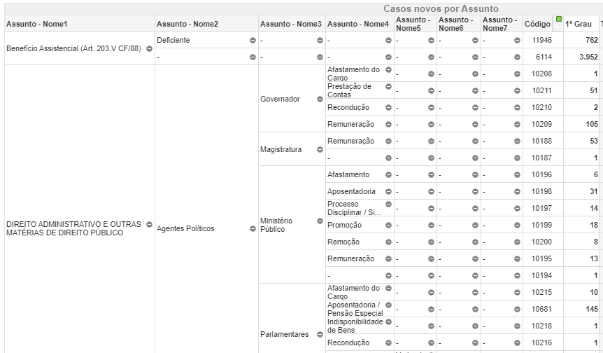
Metodologia
Uma técnica de pesquisa
Ementa do curso
Parte 1 - Metodologia
- Processo de Geração de Dados
- Teorema de Priest & Klein
- Uma técnica de pesquisa
Parte 2 - Visualizações
- Gráfico de barras
- Histograma
- Boxplot
- Séries temporais
- Gráfico de dispersão
Uma técnica de pesquisa
O que vamos ver?
Hoje vamos ver uma técnica de pesquisa muito utilizada na ABJ. É a técnica que utilizamos nas nossas pesquisas do tipo Observatórios.
Escolhemos apresentar esta técnica de pesquisa porque:
- ela é exequível com os conhecimentos de que vocês dispõem atualmente, uma vez que não exige conhecimentos técnicos de programação tão avançados;
- ela vai suscitar várias questões de metodologia importantes, o que será bom para testarmos os conhecimentos que vimos até aqui.
Visão geral da técnica
- Listagem de processos
- Definição de escopo
- Amostragem
- Viés de seleção
- Classificação dos processos
- Processo de geração de dados (PGD)
- Operacionalização de conceitos
- Análises
- Técnicas de estatística
- Métodos mistos
Listagem de processos
Informações iniciais
- O que é? A listagem de processos é uma etapa da metodologia em que elaboramos uma lista com TODOS os processos que estão dentro do nosso escopo.
- Delimitação de escopo. É na hora da listagem de processos que você precisa pensar no escopo da pesquisa, pois listar os processos pressupõe delimitar o escopo.
- Pesquisa prospectiva ou retrospectiva? Isso acontece por causa da forma como listamos os processos, isto é, por causa dos diferentes sistemas que existem para fazer isso. A depender do sistema escolhido, teremos uma pesquisa prospectiva ou retrospectiva.
- Amostragem. É somente a partir da listagem dos processos que podemos tomar a decisão de se vamos analisar todos os processos da base ou se vamos amostrá-la, ou seja, se a pesquisa será populacional ou amostral.
- Caso a gente decida a amostrar os processos, é somente com a listagem dos processos que poderemos realizar esse procedimento, pois é somente com o número total de processos que podemos realizar uma amostragem aleatória simples.
Como listar os processos?
- Descobrir os sistemas. A informação crucial para se listar processos é saber quais são os sistemas de pesquisa de processos disponíveis.
- Listar uma base inicial de processos. Com base nos sistemas disponíveis, podemos fazer um plano de extração dos processos, buscando listar todos os processos de interesse.
- Filtragens. Muitas vezes, depois de extrairmos uma base inicial de processos, precisamos realizar procedimentos de filtragem.
TJSP/CJSG - Pesquisa
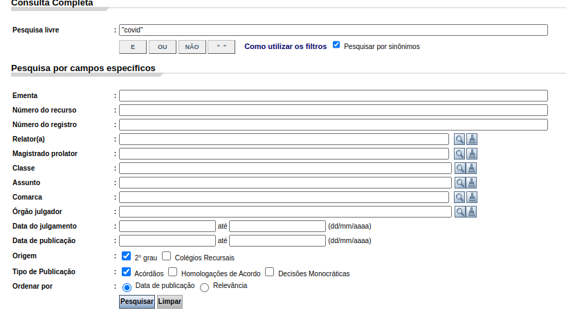TJSP/CJSG - Pesquisa
Pesquisa Livre: definido palavras-chave
O campo que normalmente mais preenchemos é o campo da pesquisa livre. Há algumas orientações gerais para definir palavras-chave:
- Repertório inicial de palavras. Você deverá começar sempre de um repertório inicial de palavras-chave para encontrar os primeiros processos. Normalmente esse repertório inicial é insuficiente.
- Avaliando o repertório inicial. Para a avaliar a suficiência desse repertório inicial, você deve verificar manualmente os processos retornados.
- Essa avaliação pode te mostrar que o repertório inicial está amplo demais (e, portanto, está pegando muito “lixo”), ou está restrito demais (e, portanto, está deixando muito processo de interesse de fora).
- Encontrando o repertório “ideal”. Você deve balancear a parcimônia x precisão. As palavras-chave devem ser as mais genéricas e simples possíveis, a fim de não deixar nenhum processo de fora, mas elas devem também ser as mais precisas possíveis para que a listagem de processos não tenha um monte de “lixo”.
- É impossível de encontrar as palavras-chaves perfeitas, que vão capturar 100% dos processos de interesse, sem pegar “lixo”. Na dúvida, sempre opte por escolher palavras mais genéricas do que mais restritas (é melhor pegar coisas a mais do que deixar coisas de fora).
- Um bom repertório de palavras é aquele que consegue deixar entre 0 e 20% de processos “lixo” apenas.
TJSP/CJSG - Pesquisa
Classe e Assunto - TPUs
Quando a gente vai pensar em Classe e Assunto que queremos dentro do escopo, temos de saber quais são as classes e assuntos possíveis. Para isso temos as Tabelas Processuais Unificadas (TPUs).
Algumas informações são importantes de saber sobre as TPUs:
- Quem elabora as TPUs? O CNJ (Resolução 46/2007 do CNJ)
- Quem preenche as classes e assuntos de cada processo? Geralmente os advogados, na hora de peticionar.
- Como esse preenchimento é feito? A partir de uma lista fechada, o advogado escolhe qualquer classe e assunto, podendo inclusive colocar classes e assuntos mais “genéricos” do que o possível.
- Existe revisão desse preenchimento? Sim, o juiz pode pedir a revisão.
TJSP/CJSG - Pesquisa
Classe e Assunto - Cifra Oculta
A cifra oculta é a quantidade não observada de determinado dado. Esse problema surge, quando falamos das Classes e Assuntos processuais, por causa da forma como esses dados são gerados.
TJSP/CJSG - Pesquisa
Classe e Assunto - Cifra Oculta
TJSP/CJSG - Pesquisa
Classe e Assunto - Cifra Oculta

TJSP/CJSG - Pesquisa
TJSP/CJSG - Resultado
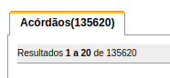TJSP/CJSG - Resultado
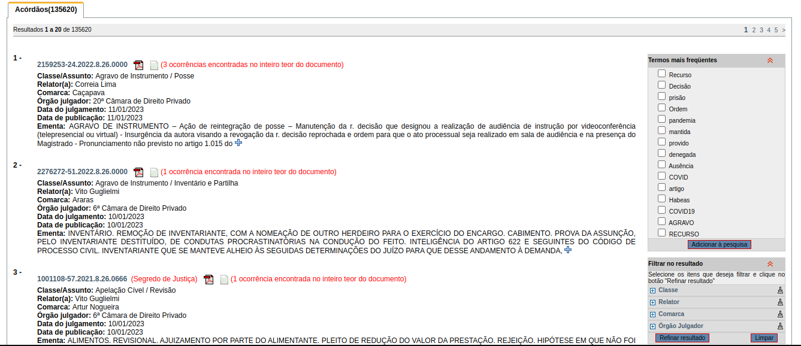TJSP/DJE - Pesquisa
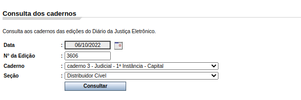TJSP/DJE - Resultados
CVM - Pesquisa
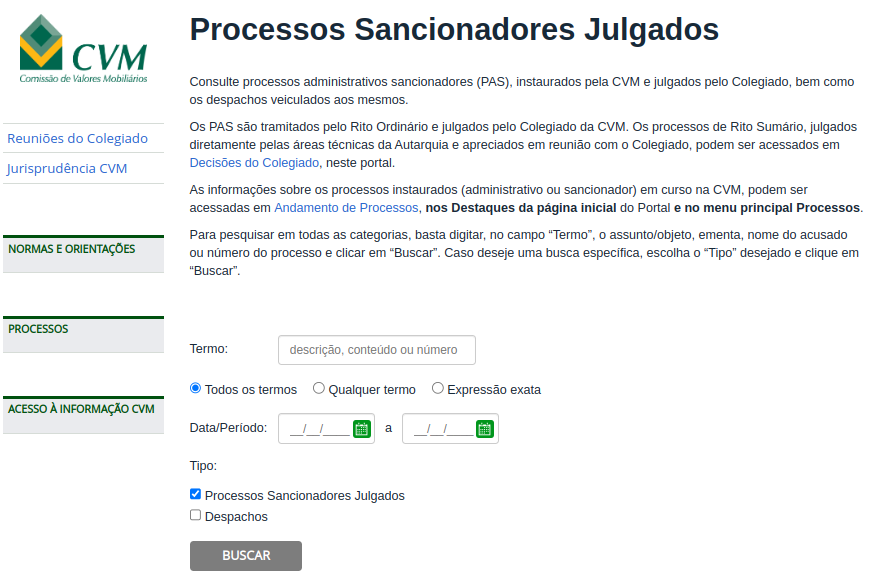
CVM - Resultado

Datajud - Pesquisa
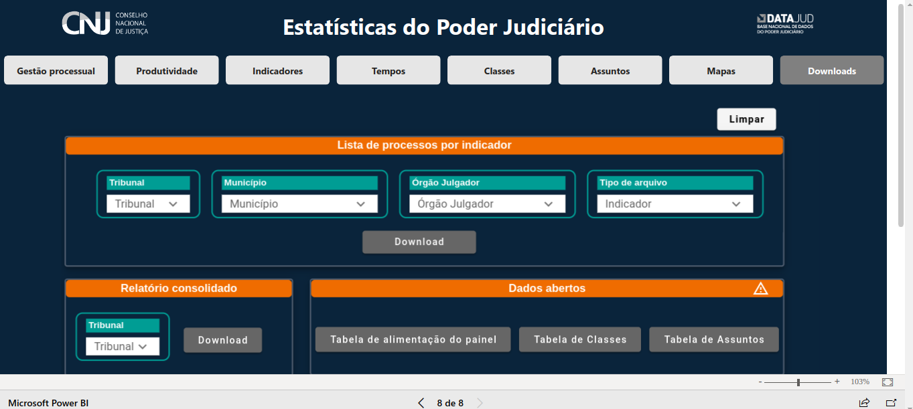
Datajud - Pesquisa
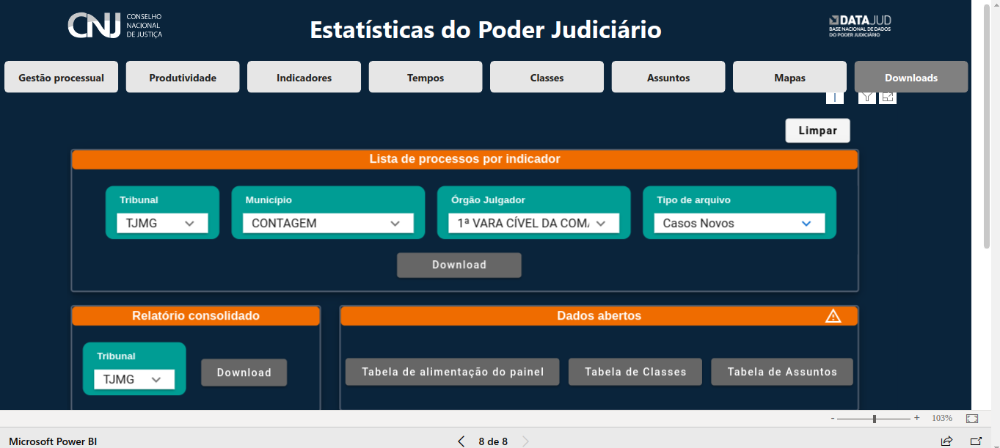
Datajud - Resultado
Datajud - Resultado
| ano | mes | data_de_referencia | tribunal | nome_orgao | codigo_orgao | municipio | uf | grau | formato | procedimento | recurso_originario | processo | nivel_de_sigilo | classe | codigo_classe |
|---|---|---|---|---|---|---|---|---|---|---|---|---|---|---|---|
| 2021 | 3 | 2021-03-11 | TJMG | 1ª VARA CÍVEL DA COMARCA DE CONTAGEM | 5386 | CONTAGEM | MG | 1º Grau | Eletrônico | Conhecimento não criminal | Originário | 5005697-02.2021.8.13.0079 | 0 | Monitória | 40 |
| 2021 | 5 | 2021-05-25 | TJMG | 1ª VARA CÍVEL DA COMARCA DE CONTAGEM | 5386 | CONTAGEM | MG | 1º Grau | Eletrônico | Execução extrajudicial não fiscal | Originário | 5003733-71.2021.8.13.0079 | 0 | Execução de Título Extrajudicial | 12154 |
| 2021 | 6 | 2021-06-21 | TJMG | 1ª VARA CÍVEL DA COMARCA DE CONTAGEM | 5386 | CONTAGEM | MG | 1º Grau | Eletrônico | Conhecimento não criminal | Originário | 5003154-59.2020.8.13.0338 | 0 | Procedimento Comum Cível | 7 |
| 2021 | 6 | 2021-06-14 | TJMG | 1ª VARA CÍVEL DA COMARCA DE CONTAGEM | 5386 | CONTAGEM | MG | 1º Grau | Eletrônico | Conhecimento não criminal | Originário | 5015858-13.2017.8.13.0079 | 0 | Procedimento Comum Cível | 7 |
| 2021 | 7 | 2021-07-26 | TJMG | 1ª VARA CÍVEL DA COMARCA DE CONTAGEM | 5386 | CONTAGEM | MG | 1º Grau | Eletrônico | Conhecimento não criminal | Originário | 5026432-95.2017.8.13.0079 | 0 | Procedimento Comum Cível | 7 |
| 2021 | 5 | 2021-05-14 | TJMG | 1ª VARA CÍVEL DA COMARCA DE CONTAGEM | 5386 | CONTAGEM | MG | 1º Grau | Eletrônico | Conhecimento não criminal | Originário | 5011684-19.2021.8.13.0079 | 0 | Procedimento Comum Cível | 7 |
| 2021 | 5 | 2021-05-17 | TJMG | 1ª VARA CÍVEL DA COMARCA DE CONTAGEM | 5386 | CONTAGEM | MG | 1º Grau | Eletrônico | Conhecimento não criminal | Originário | 5011784-71.2021.8.13.0079 | 0 | Procedimento Comum Cível | 7 |
| 2021 | 1 | 2021-01-12 | TJMG | 1ª VARA CÍVEL DA COMARCA DE CONTAGEM | 5386 | CONTAGEM | MG | 1º Grau | Eletrônico | Conhecimento não criminal | Originário | 5000534-41.2021.8.13.0079 | 0 | Procedimento Comum Cível | 7 |
| 2021 | 6 | 2021-06-03 | TJMG | 1ª VARA CÍVEL DA COMARCA DE CONTAGEM | 5386 | CONTAGEM | MG | 1º Grau | Eletrônico | Execução judicial | Originário | 5004728-60.2016.8.13.0079 | 0 | Cumprimento de sentença | 156 |
| 2021 | 10 | 2021-10-18 | TJMG | 1ª VARA CÍVEL DA COMARCA DE CONTAGEM | 5386 | CONTAGEM | MG | 1º Grau | Eletrônico | Conhecimento não criminal | Originário | 5003350-69.2016.8.13.0079 | 0 | Busca e Apreensão | 181 |
| 2021 | 7 | 2021-07-05 | TJMG | 1ª VARA CÍVEL DA COMARCA DE CONTAGEM | 5386 | CONTAGEM | MG | 1º Grau | Eletrônico | Conhecimento não criminal | Originário | 5005798-78.2017.8.13.0079 | 0 | Procedimento Comum Cível | 7 |
| 2021 | 5 | 2021-05-19 | TJMG | 1ª VARA CÍVEL DA COMARCA DE CONTAGEM | 5386 | CONTAGEM | MG | 1º Grau | Eletrônico | Conhecimento não criminal | Originário | 5012049-73.2021.8.13.0079 | 0 | Procedimento Comum Cível | 7 |
| 2021 | 5 | 2021-05-13 | TJMG | 1ª VARA CÍVEL DA COMARCA DE CONTAGEM | 5386 | CONTAGEM | MG | 1º Grau | Físico | Conhecimento não criminal | Originário | 0131979-40.2002.8.13.0079 | 0 | Embargos à Execução | 172 |
| 2022 | 7 | 2022-07-25 | TJMG | 1ª VARA CÍVEL DA COMARCA DE CONTAGEM | 5386 | CONTAGEM | MG | 1º Grau | Eletrônico | Conhecimento não criminal | Originário | 5014602-98.2018.8.13.0079 | 0 | Tutela Antecipada Antecedente | 12135 |
| 2021 | 5 | 2021-05-17 | TJMG | 1ª VARA CÍVEL DA COMARCA DE CONTAGEM | 5386 | CONTAGEM | MG | 1º Grau | Físico | Conhecimento não criminal | Originário | 0076806-75.1995.8.13.0079 | 0 | Busca e Apreensão | 181 |
| 2021 | 6 | 2021-06-07 | TJMG | 1ª VARA CÍVEL DA COMARCA DE CONTAGEM | 5386 | CONTAGEM | MG | 1º Grau | Físico | Conhecimento não criminal | Originário | 3532792-72.2007.8.13.0079 | 0 | Embargos à Execução | 172 |
| 2021 | 6 | 2021-06-11 | TJMG | 1ª VARA CÍVEL DA COMARCA DE CONTAGEM | 5386 | CONTAGEM | MG | 1º Grau | Eletrônico | Conhecimento não criminal | Originário | 5031209-89.2018.8.13.0079 | 0 | Embargos à Execução | 172 |
| 2021 | 6 | 2021-06-30 | TJMG | 1ª VARA CÍVEL DA COMARCA DE CONTAGEM | 5386 | CONTAGEM | MG | 1º Grau | Eletrônico | Conhecimento não criminal | Originário | 5003679-47.2017.8.13.0079 | 0 | Procedimento Comum Cível | 7 |
| 2021 | 10 | 2021-10-04 | TJMG | 1ª VARA CÍVEL DA COMARCA DE CONTAGEM | 5386 | CONTAGEM | MG | 1º Grau | Físico | Conhecimento não criminal | Originário | 0121293-86.2002.8.13.0079 | 0 | Cautelar Inominada | 183 |
| 2021 | 9 | 2021-09-29 | TJMG | 1ª VARA CÍVEL DA COMARCA DE CONTAGEM | 5386 | CONTAGEM | MG | 1º Grau | Físico | Conhecimento não criminal | Originário | 1457981-83.2004.8.13.0079 | 0 | Embargos à Execução | 172 |
Datajud - Ferramenta da ABJ

Resumo dos sistemas de extração de processos
| Fonte de pesquisa | Indexador | Escopo temporal | Técnicas de computação |
|---|---|---|---|
| CJPG/CJSG | Data da decisão | Retrospectivo | Scraper |
| DJE | Data de distribuição | Prospectivo | Scraper e tratamento de texto |
| CVM | Data da decisão | Retrospectivo | Scraper |
| Datajud | Data de distribuição | Prospectivo e Retrospectivo | Scraper ou manualmente |
Produto final

- A etapa de listagem de processos vai sempre resultar em uma planilha contendo TODOS os processos que fazem parte do escopo.
Problemas
- Cifra oculta
- “Lixo”
Case: Falências de SP
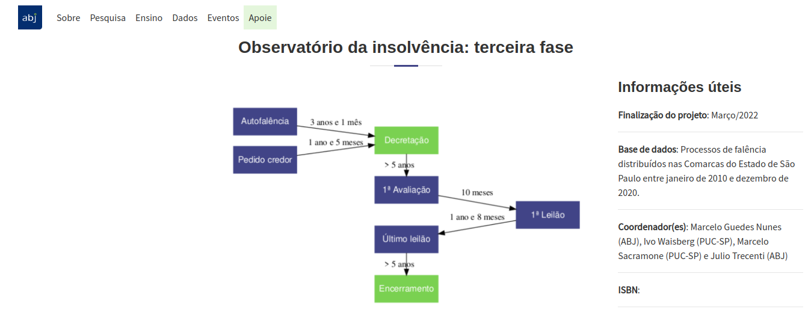
- Listagem pelo DJE
- TPUs do CNJ e Classe Processual
- Cifra oculta x Lixo
Case: Falências de SP
Etapa 1 - Acesso ao DJE
- Baixar todos os DJEs de todos os dias dentro do escopo (jan/2010-dez/2020)
- Transformar cada página em um texto
- Procurar no texto por palavras que remetam a falência, por exemplo, “falida”, “falência”, “faliu”
- Extrair, de todas as páginas que contém alguma menção a falência (e da anterior e da seguinte também), o número de todos os processos
Case: Falências de SP
Etapa 1 - Acesso ao DJE
| id_processo |
|---|
| 10200301120148260564 |
| 40118965820138260602 |
| 10029970820168260606 |
| 00044245720128260619 |
| 00031247920148260299 |
| 10047186920168260161 |
| 40093710320138260506 |
| 00143307120108260577 |
| 40006302020138260038 |
| 10120017520188260161 |
| 10410906120168260114 |
| 40150318720138260405 |
| 10045485320198260562 |
| 00420206920118260309 |
| 10039012620148260597 |
| 10004443220148260032 |
| 00001365120118260506 |
| 00141480520118260269 |
| 10026822820198260362 |
| 00137982120128260224 |
| 10046561420158260048 |
| 10321332220158260562 |
| 10001550620178260514 |
| 10113679720148260071 |
| 10023946720168260659 |
| 10073586920178260077 |
| 10038520620178260168 |
| 10325599720168260562 |
| 10029032020158260566 |
| 10209103220168260564 |
| 10001379720168260197 |
| 10134748120188260554 |
| 10014918320178260566 |
| 00119051120128260348 |
| 00069452020118260292 |
| 10014119120168260037 |
| 00103313920138260114 |
| 10006692620188260157 |
| 10175923020168260309 |
| 10014883120148260309 |
| 10030665420168260472 |
| 00065764320128260663 |
| 10035646920148260554 |
| 10185175820148260224 |
| 00008102620138260161 |
| 10027537120178260565 |
| 00004841320118260654 |
| 00086778820148260176 |
| 10310217020158260577 |
| 00015310720148260334 |
| 10009601420148260271 |
| 00298561920118260068 |
| 00010534720108260137 |
| 10235917220168260564 |
| 00053516220138260045 |
| 00144605220118260019 |
| 10249849620158260554 |
| 00111188020118260068 |
| 10091468120138260361 |
| 00324940320128260161 |
| 00030682620158260650 |
| 00075841920138260114 |
| 00010616520148260466 |
| 00102775320148260659 |
| 00144277420108260576 |
| 00004444020118260457 |
| 00022218420138260491 |
| 00089809220108260451 |
| 10167060920158260554 |
| 10009504920158260201 |
| 10221881120158260562 |
| 00046573620138260161 |
| 10060711720148260032 |
| 10138601720188260068 |
| 10059099320168260309 |
| 40016731120138260161 |
| 00572417520128260562 |
| 00349373620108260309 |
| 00378474320118260554 |
| 00554802420108260224 |
| 10039682520158260348 |
| 10223117820188260602 |
| 00129530420128260510 |
| 00246218820118260224 |
| 10002585020178260534 |
| 00161595520108260038 |
| 00212002720108260224 |
| 40074611120138260224 |
| 10115693820198260576 |
| 10116252920178260451 |
| 00145474820108260114 |
| 00127412120138260292 |
| 10061638620158260152 |
| 10097226220158260019 |
| 40045922520138260564 |
| 00024175720148260511 |
| 10032608920188260082 |
| 00205867920108260302 |
| 00074986720138260625 |
| 10020462020168260022 |
Case: Falências de SP
Etapa 2 - Filtragem com base nas TPUs
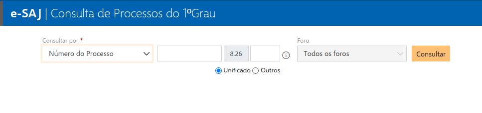Case: Falências de SP
Etapa 2 - Filtragem com base nas TPUs
Case: Falências de SP
Etapa 2 - Filtragem com base nas TPUs
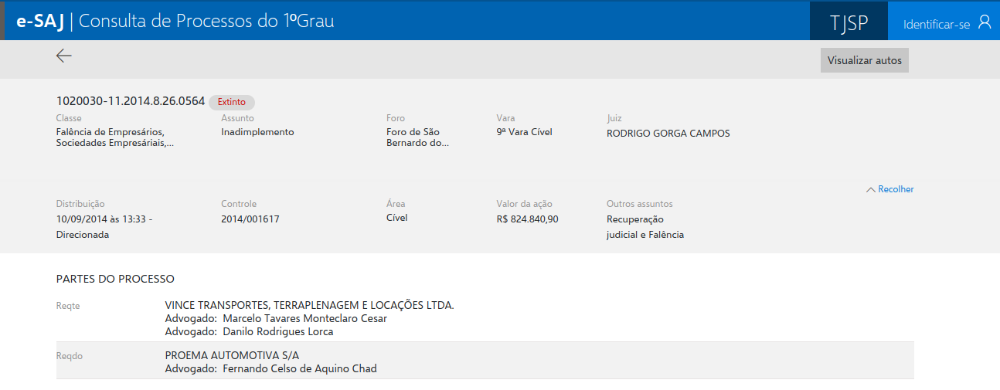Case: Falências de SP
Etapa 2 - Filtragem com base nas TPUs
| id_processo | status | classe | assunto | foro | juiz | vara | distribuicao | controle | area | valor_da_acao | digital |
|---|---|---|---|---|---|---|---|---|---|---|---|
| 10041272820188260100 | Extinto | Procedimento Comum Cível | Franquia | Foro Central Cível | Eduardo Palma Pellegrinelli | 2ª VARA EMPRESARIAL E CONFLITOS DE ARBITRAGEM | 22/01/2018 às 14:38 - Direcionada | 2018/000024 | Cível | R$ 86.909,87 | TRUE |
| 11182062020188260100 | Em grau de recurso | Falência de Empresários, Sociedades Empresáriais, Microempresas e Empresas de Pequeno Porte | Inadimplemento | Foro Central Cível | GUILHERME DE PAULA NASCENTE NUNES | 2ª VARA EMPRESARIAL E CONFLITOS DE ARBITRAGEM | 19/11/2018 às 10:04 - Livre | 2018/000977 | Cível | R$ 470.733,33 | FALSE |
| 11074071020218260100 | Extinto, Tramitação prioritária | Dissolução Parcial de Sociedade | Tutela de Urgência | Foro Central Cível | Eduardo Palma Pellegrinelli | 2ª VARA EMPRESARIAL E CONFLITOS DE ARBITRAGEM | 04/10/2021 às 17:26 - Livre | 2021/001094 | Cível | R$ 1.000,00 | TRUE |
| 10553918420188260100 | Extinto | Cumprimento de sentença | Sentença arbitral (artigo 515, inciso VII, CPC) | Foro Central Cível | LUIS FELIPE FERRARI BEDENDI | 2ª VARA EMPRESARIAL E CONFLITOS DE ARBITRAGEM | 24/05/2018 às 19:27 - Livre | 2018/000383 | Cível | R$ 530.000,00 | TRUE |
| 11242542920178260100 | Em grau de recurso | Procedimento Comum Cível | Rescisão / Resolução | Foro Central Cível | LUIS FELIPE FERRARI BEDENDI | 1ª VARA EMPRESARIAL E CONFLITOS DE ARBITRAGEM | 16/04/2018 às 09:44 - Livre | 2018/000225 | Cível | R$ 5.000,00 | FALSE |
| 10036538620208260100 | Extinto | Falência de Empresários, Sociedades Empresáriais, Microempresas e Empresas de Pequeno Porte | Inadimplemento | Foro Central Cível | Andre Salomon Tudisco | 1ª VARA EMPRESARIAL E CONFLITOS DE ARBITRAGEM | 13/04/2020 às 11:32 - Livre | 2020/000314 | Cível | R$ 12.000,00 | TRUE |
| 10292716720198260100 | Extinto | Falência de Empresários, Sociedades Empresáriais, Microempresas e Empresas de Pequeno Porte | Inadimplemento | Foro Central Cível | LUIS FELIPE FERRARI BEDENDI | 1ª VARA EMPRESARIAL E CONFLITOS DE ARBITRAGEM | 02/04/2019 às 16:17 - Livre | 2019/000302 | Cível | R$ 1.000,00 | TRUE |
| 11237681020188260100 | Extinto | Falência de Empresários, Sociedades Empresáriais, Microempresas e Empresas de Pequeno Porte | Inadimplemento | Foro Central Cível | GUILHERME DE PAULA NASCENTE NUNES | 2ª VARA EMPRESARIAL E CONFLITOS DE ARBITRAGEM | 04/12/2018 às 19:19 - Livre | 2018/001045 | Cível | R$ 100.000,00 | TRUE |
| 10979992920208260100 | Extinto, Tramitação prioritária | Tutela Cautelar Antecedente | Liminar | Foro Central Cível | LUIS FELIPE FERRARI BEDENDI | 1ª VARA EMPRESARIAL E CONFLITOS DE ARBITRAGEM | 19/10/2020 às 14:01 - Livre | 2020/001162 | Cível | R$ 1.000.000,00 | TRUE |
| 10391471220208260100 | Extinto, Tramitação prioritária | Tutela Cautelar Antecedente | Liminar | Foro Central Cível | LUIS FELIPE FERRARI BEDENDI | 2ª VARA EMPRESARIAL E CONFLITOS DE ARBITRAGEM | 13/05/2020 às 17:01 - Livre | 2020/000411 | Cível | R$ 10.000.000,00 | TRUE |
| 10693477020188260100 | Em grau de recurso | Procedimento Comum Cível | Defeito, nulidade ou anulação | Foro Central Cível | LUIS FELIPE FERRARI BEDENDI | 1ª VARA EMPRESARIAL E CONFLITOS DE ARBITRAGEM | 16/07/2018 às 12:13 - Livre | 2018/000534 | Cível | R$ 10.000,00 | FALSE |
| 10380967420178260001 | Extinto, Tramitação prioritária | Falência de Empresários, Sociedades Empresáriais, Microempresas e Empresas de Pequeno Porte | Inadimplemento | Foro Central Cível | Andre Salomon Tudisco | 1ª VARA EMPRESARIAL E CONFLITOS DE ARBITRAGEM | 07/02/2018 às 19:19 - Livre | 2018/000055 | Cível | R$ 1.127.636,65 | TRUE |
| 10559581820188260100 | Em grau de recurso | Falência de Empresários, Sociedades Empresáriais, Microempresas e Empresas de Pequeno Porte | Inadimplemento | Foro Central Cível | Andre Salomon Tudisco | 1ª VARA EMPRESARIAL E CONFLITOS DE ARBITRAGEM | 25/05/2018 às 19:18 - Livre | 2018/000380 | Cível | R$ 166.613,58 | FALSE |
| 10349302320208260100 | Extinto, Tramitação prioritária | Tutela Antecipada Antecedente | Liminar | Foro Central Cível | Eduardo Palma Pellegrinelli | 1ª VARA EMPRESARIAL E CONFLITOS DE ARBITRAGEM | 29/04/2020 às 14:01 - Livre | 2020/000376 | Cível | R$ 521.131,62 | TRUE |
| 00397760320208260100 | Extinto | Procedimento Comum Cível | Defeito, nulidade ou anulação | Foro Central Cível | LUIS FELIPE FERRARI BEDENDI | 1ª VARA EMPRESARIAL E CONFLITOS DE ARBITRAGEM | 03/09/2020 às 13:48 - Livre | 2020/000936 | Cível | R$ 48.573,00 | TRUE |
| 11258219520178260100 | Em grau de recurso | Falência de Empresários, Sociedades Empresáriais, Microempresas e Empresas de Pequeno Porte | Inadimplemento | Foro Central Cível | GUILHERME DE PAULA NASCENTE NUNES | 2ª VARA EMPRESARIAL E CONFLITOS DE ARBITRAGEM | 19/12/2017 às 18:43 - Livre | 2017/000033 | Cível | R$ 1.000,00 | FALSE |
| 10937189820188260100 | Extinto | Tutela Cautelar Antecedente | Liminar | Foro Central Cível | LUIS FELIPE FERRARI BEDENDI | 1ª VARA EMPRESARIAL E CONFLITOS DE ARBITRAGEM | 10/09/2018 às 14:06 - Livre | 2018/000739 | Cível | R$ 364.802,32 | TRUE |
| 10406166420188260100 | Extinto | Cumprimento de sentença | Sentença arbitral (artigo 515, inciso VII, CPC) | Foro Central Cível | LUIS FELIPE FERRARI BEDENDI | 2ª VARA EMPRESARIAL E CONFLITOS DE ARBITRAGEM | 13/04/2018 às 20:47 - Livre | 2018/000233 | Cível | R$ 1.000,00 | TRUE |
| 11086127920188260100 | Extinto | Cumprimento de sentença | Sentença arbitral (artigo 515, inciso VII, CPC) | Foro Central Cível | GUILHERME DE PAULA NASCENTE NUNES | 2ª VARA EMPRESARIAL E CONFLITOS DE ARBITRAGEM | 20/10/2018 às 03:01 - Livre | 2018/000909 | Cível | R$ 205.317,50 | TRUE |
| 11100021620208260100 | Extinto | Interpelação | DIREITO PROCESSUAL CIVIL E DO TRABALHO-Liquidação / Cumprimento / Execução-Obrigação de Fazer / Não Fazer | Foro Central Cível | Andre Salomon Tudisco | 1ª VARA EMPRESARIAL E CONFLITOS DE ARBITRAGEM | 19/11/2020 às 16:19 - Livre | 2020/001319 | Cível | R$ 1.000,00 | TRUE |
| 10240934020198260100 | Extinto | Falência de Empresários, Sociedades Empresáriais, Microempresas e Empresas de Pequeno Porte | Inadimplemento | Foro Central Cível | Andre Salomon Tudisco | 1ª VARA EMPRESARIAL E CONFLITOS DE ARBITRAGEM | 20/03/2019 às 11:27 - Livre | 2019/000258 | Cível | R$ 163.082,95 | TRUE |
| 10177580820198260002 | Em grau de recurso | Procedimento Comum Cível | Franquia | Foro Central Cível | Andre Salomon Tudisco | 1ª VARA EMPRESARIAL E CONFLITOS DE ARBITRAGEM | 28/04/2019 às 11:02 - Livre | 2019/000407 | Cível | R$ 45.278,67 | TRUE |
| 10158572320208260405 | Extinto | Falência de Empresários, Sociedades Empresáriais, Microempresas e Empresas de Pequeno Porte | Inadimplemento | Foro Especializado 1ª RAJ/7ª RAJ/9ª RAJ | Marcello do Amaral Perino | 1ª Vara Regional de Competência Empresarial e de Conflitos Relacionados à Arbitragem | 05/11/2020 às 13:27 - Livre | 2020/000352 | Cível | R$ 11.799,42 | TRUE |
| 10863215120198260100 | Extinto | Falência de Empresários, Sociedades Empresáriais, Microempresas e Empresas de Pequeno Porte | Inadimplemento | Foro Central Cível | GUILHERME DE PAULA NASCENTE NUNES | 2ª VARA EMPRESARIAL E CONFLITOS DE ARBITRAGEM | 21/10/2019 às 17:45 - Livre | 2019/001095 | Cível | R$ 20.573,64 | TRUE |
| 10591826120188260100 | Extinto | Cumprimento de sentença | Sentença arbitral (artigo 515, inciso VII, CPC) | Foro Central Cível | LUIS FELIPE FERRARI BEDENDI | 2ª VARA EMPRESARIAL E CONFLITOS DE ARBITRAGEM | 06/06/2018 às 12:13 - Livre | 2018/000420 | Cível | R$ 21.918,34 | TRUE |
| 10255804520198260100 | Extinto | Falência de Empresários, Sociedades Empresáriais, Microempresas e Empresas de Pequeno Porte | Inadimplemento | Foro Central Cível | GUILHERME DE PAULA NASCENTE NUNES | 2ª VARA EMPRESARIAL E CONFLITOS DE ARBITRAGEM | 22/03/2019 às 22:06 - Livre | 2019/000259 | Cível | R$ 844.012,94 | TRUE |
| 10696380220208260100 | Extinto, Tramitação prioritária | Falência de Empresários, Sociedades Empresáriais, Microempresas e Empresas de Pequeno Porte | Inadimplemento | Foro Central Cível | GUILHERME DE PAULA NASCENTE NUNES | 2ª VARA EMPRESARIAL E CONFLITOS DE ARBITRAGEM | 05/08/2020 às 15:28 - Livre | 2020/000772 | Cível | R$ 6.969,95 | TRUE |
| 10846710320188260100 | Extinto, Tramitação prioritária | Tutela Cautelar Antecedente | Liminar | Foro Central Cível | Eduardo Palma Pellegrinelli | 1ª VARA EMPRESARIAL E CONFLITOS DE ARBITRAGEM | 15/08/2018 às 19:18 - Dependência (1072000-45.2018.8.26.0100) | 2018/000651 | Cível | R$ 10.000,00 | TRUE |
| 10890785220188260100 | Extinto | Cumprimento de sentença | Sentença arbitral (artigo 515, inciso VII, CPC) | Foro Central Cível | Andre Salomon Tudisco | 1ª VARA EMPRESARIAL E CONFLITOS DE ARBITRAGEM | 27/08/2018 às 19:09 - Livre | 2018/000691 | Cível | R$ 98.130,79 | TRUE |
| 10732212920198260100 | Em grau de recurso | Falência de Empresários, Sociedades Empresáriais, Microempresas e Empresas de Pequeno Porte | Inadimplemento | Foro Central Cível | Eduardo Palma Pellegrinelli | 1ª VARA EMPRESARIAL E CONFLITOS DE ARBITRAGEM | 30/07/2019 às 18:41 - Livre | 2019/000759 | Cível | R$ 771.382,71 | FALSE |
| 11095974820188260100 | Extinto | Procedimento Comum Cível | Responsabilidade dos sócios e administradores | Foro Central Cível | LUIS FELIPE FERRARI BEDENDI | 2ª VARA EMPRESARIAL E CONFLITOS DE ARBITRAGEM | 23/10/2018 às 18:03 - Livre | 2018/000914 | Cível | R$ 10.000,00 | TRUE |
| 10967467420188260100 | Extinto, Tramitação prioritária | Procedimento Comum Cível | Anônima | Foro Central Cível | LUIS FELIPE FERRARI BEDENDI | 1ª VARA EMPRESARIAL E CONFLITOS DE ARBITRAGEM | 17/09/2018 às 22:03 - Livre | 2018/000778 | Cível | R$ 10.000,00 | TRUE |
| 11177697620188260100 | Extinto | Falência de Empresários, Sociedades Empresáriais, Microempresas e Empresas de Pequeno Porte | Inadimplemento | Foro Central Cível | LUIS FELIPE FERRARI BEDENDI | 2ª VARA EMPRESARIAL E CONFLITOS DE ARBITRAGEM | 14/11/2018 às 19:20 - Livre | 2018/000972 | Cível | R$ 2.330.671,80 | TRUE |
| 10711678520228260100 | Tramitação prioritária | Procedimento Comum Cível | Dissolução | Foro Central Cível | Eduardo Palma Pellegrinelli | 1ª VARA EMPRESARIAL E CONFLITOS DE ARBITRAGEM | 08/07/2022 às 14:02 - Livre | 2022/000912 | Cível | R$ 635.777,39 | TRUE |
| 10376575220208260100 | Extinto | Falência de Empresários, Sociedades Empresáriais, Microempresas e Empresas de Pequeno Porte | Inadimplemento | Foro Central Cível | LUIS FELIPE FERRARI BEDENDI | 2ª VARA EMPRESARIAL E CONFLITOS DE ARBITRAGEM | 08/05/2020 às 13:13 - Livre | 2020/000395 | Cível | R$ 10.000,00 | TRUE |
| 10483367720218260100 | Extinto, Tramitação prioritária | Procedimento Comum Cível | Anulação de sentença arbitral (Art. 33, Lei nº 9.307/96) | Foro Central Cível | GUILHERME DE PAULA NASCENTE NUNES | 2ª VARA EMPRESARIAL E CONFLITOS DE ARBITRAGEM | 13/05/2021 às 15:00 - Livre | 2021/000505 | Cível | R$ 10.000,00 | TRUE |
| 10321972120198260100 | Extinto | Falência de Empresários, Sociedades Empresáriais, Microempresas e Empresas de Pequeno Porte | Inadimplemento | Foro Central Cível | LUIS FELIPE FERRARI BEDENDI | 1ª VARA EMPRESARIAL E CONFLITOS DE ARBITRAGEM | 10/04/2019 às 13:08 - Livre | 2019/000337 | Cível | R$ 365.953,12 | TRUE |
| 10593128020208260100 | Extinto | Tutela Antecipada Antecedente | Liminar | Foro Central Cível | Andre Salomon Tudisco | 1ª VARA EMPRESARIAL E CONFLITOS DE ARBITRAGEM | 09/07/2020 às 23:01 - Livre | 2020/000673 | Cível | R$ 1.000.000,00 | TRUE |
| 10529347920188260100 | Extinto | Cumprimento de sentença | Sentença arbitral (artigo 515, inciso VII, CPC) | Foro Central Cível | Andre Salomon Tudisco | 1ª VARA EMPRESARIAL E CONFLITOS DE ARBITRAGEM | 18/05/2018 às 11:08 - Livre | 2018/000349 | Cível | R$ 1.000,00 | TRUE |
| 10073107020198260100 | Extinto, Tramitação prioritária | Falência de Empresários, Sociedades Empresáriais, Microempresas e Empresas de Pequeno Porte | Inadimplemento | Foro Central Cível | LUIS FELIPE FERRARI BEDENDI | 2ª VARA EMPRESARIAL E CONFLITOS DE ARBITRAGEM | 31/01/2019 às 16:24 - Livre | 2019/000070 | Cível | R$ 48.533,96 | TRUE |
| 10176051720218260224 | Extinto | Habilitação de Crédito | Inexequibilidade do Título / Inexigibilidade da Obrigação | Foro Especializado 1ª RAJ/7ª RAJ/9ª RAJ | Marcello do Amaral Perino | 1ª Vara Regional de Competência Empresarial e de Conflitos Relacionados à Arbitragem | 30/09/2021 às 04:16 - Dependência (1013038-40.2021.8.26.0224) | 2021/000835 | Cível | R$ 21.960,20 | TRUE |
| 10008449220218260002 | Extinto | Falência de Empresários, Sociedades Empresáriais, Microempresas e Empresas de Pequeno Porte | Inadimplemento | Foro Central Cível | Andre Salomon Tudisco | 1ª VARA EMPRESARIAL E CONFLITOS DE ARBITRAGEM | 10/07/2021 às 22:55 - Livre | 2021/000795 | Cível | R$ 8.076,83 | TRUE |
| 10942974620188260100 | Extinto | Tutela Cautelar Antecedente | Liminar | Foro Central Cível | Eduardo Palma Pellegrinelli | 2ª VARA EMPRESARIAL E CONFLITOS DE ARBITRAGEM | 11/09/2018 às 14:06 - Livre | 2018/000755 | Cível | R$ 10.000,00 | TRUE |
| 10430237220208260100 | Em grau de recurso | Falência de Empresários, Sociedades Empresáriais, Microempresas e Empresas de Pequeno Porte | Inadimplemento | Foro Central Cível | LUIS FELIPE FERRARI BEDENDI | 1ª VARA EMPRESARIAL E CONFLITOS DE ARBITRAGEM | 01/06/2020 às 15:15 - Livre | 2020/000492 | Cível | R$ 8.283.000,00 | FALSE |
| 10449328620198260100 | Em grau de recurso | Procedimento Comum Cível | Defeito, nulidade ou anulação | Foro Central Cível | Eduardo Palma Pellegrinelli | 1ª VARA EMPRESARIAL E CONFLITOS DE ARBITRAGEM | 15/05/2019 às 13:58 - Livre | 2019/000472 | Cível | R$ 46.073.662,80 | FALSE |
| 10198808820198260100 | Em grau de recurso | Falência de Empresários, Sociedades Empresáriais, Microempresas e Empresas de Pequeno Porte | Inadimplemento | Foro Central Cível | GUILHERME DE PAULA NASCENTE NUNES | 2ª VARA EMPRESARIAL E CONFLITOS DE ARBITRAGEM | 08/03/2019 às 10:09 - Livre | 2019/000198 | Cível | R$ 26.361,53 | FALSE |
| 10100876720208260011 | Extinto | Protesto | Ato / Negócio Jurídico | Foro Central Cível | GUILHERME DE PAULA NASCENTE NUNES | 2ª VARA EMPRESARIAL E CONFLITOS DE ARBITRAGEM | 30/11/2020 às 12:00 - Direcionada | 2020/001330 | Cível | R$ 10.000,00 | TRUE |
| 10245928720208260100 | Em grau de recurso | Falência de Empresários, Sociedades Empresáriais, Microempresas e Empresas de Pequeno Porte | Inadimplemento | Foro Central Cível | GUILHERME DE PAULA NASCENTE NUNES | 2ª VARA EMPRESARIAL E CONFLITOS DE ARBITRAGEM | 19/03/2020 às 16:20 - Livre | 2020/000263 | Cível | R$ 2.577.770,81 | FALSE |
| 10113772620208260009 | Extinto | Procedimento Comum Cível | Indenização por Dano Material | Foro Central Cível | LUIS FELIPE FERRARI BEDENDI | 1ª VARA EMPRESARIAL E CONFLITOS DE ARBITRAGEM | 17/12/2020 às 12:59 - Livre | 2020/001442 | Cível | R$ 30.000,00 | TRUE |
| 10442812020208260100 | Extinto | Tutela Cautelar Antecedente | Liminar | Foro Central Cível | LUIS FELIPE FERRARI BEDENDI | 2ª VARA EMPRESARIAL E CONFLITOS DE ARBITRAGEM | 29/05/2020 às 18:35 - Livre | 2020/000463 | Cível | R$ 10.000,00 | TRUE |
| 10727236420188260100 | Extinto | Tutela Cautelar Antecedente | Liminar | Foro Central Cível | GUILHERME DE PAULA NASCENTE NUNES | 2ª VARA EMPRESARIAL E CONFLITOS DE ARBITRAGEM | 16/07/2018 às 19:57 - Livre | 2018/000550 | Cível | R$ 50.005.732,47 | TRUE |
| 10585564220188260100 | Em grau de recurso | Procedimento Comum Cível | Ingresso e Exclusão dos Sócios na Sociedade | Foro Central Cível | Andre Salomon Tudisco | 1ª VARA EMPRESARIAL E CONFLITOS DE ARBITRAGEM | 05/06/2018 às 08:27 - Livre | 2018/000399 | Cível | R$ 450.000,00 | FALSE |
| 11183725220188260100 | Em grau de recurso | Falência de Empresários, Sociedades Empresáriais, Microempresas e Empresas de Pequeno Porte | Inadimplemento | Foro Central Cível | LUIS FELIPE FERRARI BEDENDI | 1ª VARA EMPRESARIAL E CONFLITOS DE ARBITRAGEM | 19/11/2018 às 16:22 - Livre | 2018/000985 | Cível | R$ 41.110,56 | FALSE |
| 10198712920198260100 | Em grau de recurso | Falência de Empresários, Sociedades Empresáriais, Microempresas e Empresas de Pequeno Porte | Inadimplemento | Foro Central Cível | GUILHERME DE PAULA NASCENTE NUNES | 2ª VARA EMPRESARIAL E CONFLITOS DE ARBITRAGEM | 08/03/2019 às 09:05 - Livre | 2019/000197 | Cível | R$ 564.724,10 | FALSE |
| 11315628220188260100 | Extinto | Falência de Empresários, Sociedades Empresáriais, Microempresas e Empresas de Pequeno Porte | Inadimplemento | Foro Central Cível | Eduardo Palma Pellegrinelli | 2ª VARA EMPRESARIAL E CONFLITOS DE ARBITRAGEM | 19/12/2018 às 16:31 - Livre | 2018/001111 | Cível | R$ 1.000,00 | TRUE |
| 11350028120218260100 | Extinto, Tramitação prioritária | Tutela Cautelar Antecedente | Medida cautelar ou de urgência pré-arbitral (Art. 22-A, Lei nº 9.307/96) | Foro Central Cível | Eduardo Palma Pellegrinelli | 2ª VARA EMPRESARIAL E CONFLITOS DE ARBITRAGEM | 10/12/2021 às 23:01 - Livre | 2021/001372 | Cível | R$ 100.000,00 | TRUE |
| 10018763620218260228 | Extinto, Tramitação prioritária | Tutela Cautelar Antecedente | Liminar | Foro Central Cível | Eduardo Palma Pellegrinelli | 1ª VARA EMPRESARIAL E CONFLITOS DE ARBITRAGEM | 23/02/2022 às 08:21 - Livre | 2022/000233 | Cível | R$ 10.000,00 | TRUE |
| 10516039120208260100 | Extinto | Tutela Cautelar Antecedente | Liminar | Foro Central Cível | LUIS FELIPE FERRARI BEDENDI | 2ª VARA EMPRESARIAL E CONFLITOS DE ARBITRAGEM | 19/06/2020 às 20:02 - Livre | 2020/000549 | Cível | R$ 100.000,00 | TRUE |
| 11161204220198260100 | Em grau de recurso | Procedimento Comum Cível | Liminar | Foro Central Cível | Andre Salomon Tudisco | 1ª VARA EMPRESARIAL E CONFLITOS DE ARBITRAGEM | 18/11/2019 às 20:00 - Livre | 2019/001249 | Cível | R$ 1.000,00 | FALSE |
| 10406393920208260100 | Extinto | Produção Antecipada da Prova | Provas em geral | Foro Central Cível | LUIS FELIPE FERRARI BEDENDI | 2ª VARA EMPRESARIAL E CONFLITOS DE ARBITRAGEM | 18/05/2020 às 20:19 - Livre | 2020/000426 | Cível | R$ 1.000,00 | TRUE |
| 10960333120208260100 | Extinto | Procedimento Comum Cível | Franquia | Foro Central Cível | GUILHERME DE PAULA NASCENTE NUNES | 2ª VARA EMPRESARIAL E CONFLITOS DE ARBITRAGEM | 13/10/2020 às 18:36 - Livre | 2020/001109 | Cível | R$ 21.128,66 | TRUE |
| 10791914420188260100 | Extinto | Cumprimento de sentença | Sentença arbitral (artigo 515, inciso VII, CPC) | Foro Central Cível | Eduardo Palma Pellegrinelli | 1ª VARA EMPRESARIAL E CONFLITOS DE ARBITRAGEM | 01/08/2018 às 10:05 - Livre | 2018/000591 | Cível | R$ 48.000,00 | TRUE |
| 10856445520188260100 | Extinto | Falência de Empresários, Sociedades Empresáriais, Microempresas e Empresas de Pequeno Porte | Inadimplemento | Foro Central Cível | Eduardo Palma Pellegrinelli | 1ª VARA EMPRESARIAL E CONFLITOS DE ARBITRAGEM | 17/08/2018 às 18:09 - Livre | 2018/000662 | Cível | R$ 165.000,00 | TRUE |
| 10457541220188260100 | Suspenso | Produção Antecipada da Prova | Provas | Foro Central Cível | GUILHERME DE PAULA NASCENTE NUNES | 2ª VARA EMPRESARIAL E CONFLITOS DE ARBITRAGEM | 26/04/2018 às 18:07 - Livre | 2018/000290 | Cível | R$ 10.000,00 | TRUE |
| 10877959120188260100 | Extinto | Falência de Empresários, Sociedades Empresáriais, Microempresas e Empresas de Pequeno Porte | Inadimplemento | Foro Central Cível | Eduardo Palma Pellegrinelli | 1ª VARA EMPRESARIAL E CONFLITOS DE ARBITRAGEM | 23/08/2018 às 17:43 - Livre | 2018/000682 | Cível | R$ 2.558.087,69 | TRUE |
| 10559321820218260002 | Extinto | Falência de Empresários, Sociedades Empresáriais, Microempresas e Empresas de Pequeno Porte | Inadimplemento | Foro Central Cível | LUIS FELIPE FERRARI BEDENDI | 1ª VARA EMPRESARIAL E CONFLITOS DE ARBITRAGEM | 07/10/2021 às 13:24 - Livre | 2021/001187 | Cível | R$ 1.000,00 | TRUE |
| 10405387020188260100 | Extinto | Cumprimento de sentença | Sentença arbitral (artigo 515, inciso VII, CPC) | Foro Central Cível | Andre Salomon Tudisco | 1ª VARA EMPRESARIAL E CONFLITOS DE ARBITRAGEM | 13/04/2018 às 18:30 - Livre | 2018/000218 | Cível | R$ 1.000,00 | TRUE |
| 11218189220208260100 | Em grau de recurso, Tramitação prioritária | Procedimento Comum Cível | Franquia | Foro Central Cível | GUILHERME DE PAULA NASCENTE NUNES | 2ª VARA EMPRESARIAL E CONFLITOS DE ARBITRAGEM | 29/01/2021 às 16:55 - Livre | 2021/000078 | Cível | R$ 359.000,00 | FALSE |
| 11025078620188260100 | Extinto | Falência de Empresários, Sociedades Empresáriais, Microempresas e Empresas de Pequeno Porte | Inadimplemento | Foro Central Cível | LUIS FELIPE FERRARI BEDENDI | 2ª VARA EMPRESARIAL E CONFLITOS DE ARBITRAGEM | 03/10/2018 às 12:07 - Livre | 2018/000844 | Cível | R$ 203.063,05 | TRUE |
| 10840731520198260100 | Extinto | Tutela Antecipada Antecedente | Liminar | Foro Central Cível | GUILHERME DE PAULA NASCENTE NUNES | 2ª VARA EMPRESARIAL E CONFLITOS DE ARBITRAGEM | 27/08/2019 às 18:42 - Livre | 2019/000839 | Cível | R$ 1.000,00 | TRUE |
| 10213586320218260100 | Extinto | Tutela Cautelar Antecedente | Liminar | Foro Central Cível | Eduardo Palma Pellegrinelli | 1ª VARA EMPRESARIAL E CONFLITOS DE ARBITRAGEM | 04/03/2021 às 12:00 - Livre | 2021/000226 | Cível | R$ 1.000,00 | TRUE |
| 10073066720188260100 | Extinto | Tutela Cautelar Antecedente | Liminar | Foro Central Cível | LUIS FELIPE FERRARI BEDENDI | 2ª VARA EMPRESARIAL E CONFLITOS DE ARBITRAGEM | 01/02/2018 às 15:09 - Livre | 2018/000043 | Cível | R$ 1.000,00 | TRUE |
| 10083121220188260100 | Suspenso | Procedimento Comum Cível | Franquia | Foro Central Cível | LUIS FELIPE FERRARI BEDENDI | 1ª VARA EMPRESARIAL E CONFLITOS DE ARBITRAGEM | 16/05/2018 às 16:09 - Livre | 2018/000343 | Cível | R$ 170.000,00 | TRUE |
| 11063072520188260100 | Extinto | Procedimento Comum Cível | Compromisso | Foro Central Cível | LUIS FELIPE FERRARI BEDENDI | 2ª VARA EMPRESARIAL E CONFLITOS DE ARBITRAGEM | 06/12/2018 às 14:45 - Livre | 2018/001048 | Cível | R$ 1.000,00 | TRUE |
| 10433398520208260100 | Em grau de recurso | Procedimento Comum Cível | Franquia | Foro Central Cível | LUIS FELIPE FERRARI BEDENDI | 1ª VARA EMPRESARIAL E CONFLITOS DE ARBITRAGEM | 02/06/2020 às 17:35 - Livre | 2020/000501 | Cível | R$ 120.483,07 | FALSE |
| 10025213820188260011 | Extinto | Procedimento Comum Cível | Defeito, nulidade ou anulação | Foro Central Cível | LUIS FELIPE FERRARI BEDENDI | 2ª VARA EMPRESARIAL E CONFLITOS DE ARBITRAGEM | 12/04/2018 às 09:50 - Livre | 2018/000222 | Cível | R$ 8.925.000,00 | TRUE |
| 10939922820198260100 | Extinto | Falência de Empresários, Sociedades Empresáriais, Microempresas e Empresas de Pequeno Porte | Inadimplemento | Foro Central Cível | LUIS FELIPE FERRARI BEDENDI | 1ª VARA EMPRESARIAL E CONFLITOS DE ARBITRAGEM | 30/09/2019 às 18:37 - Livre | 2019/001043 | Cível | R$ 10.000,00 | TRUE |
| 11142373120178260100 | Extinto | Procedimento Comum Cível | Defeito, nulidade ou anulação | Foro Central Cível | Andre Salomon Tudisco | 1ª VARA EMPRESARIAL E CONFLITOS DE ARBITRAGEM | 14/02/2018 às 16:35 - Livre | 2018/000065 | Cível | R$ 24.676.584,03 | TRUE |
| 10109349320208260100 | Em grau de recurso | Falência de Empresários, Sociedades Empresáriais, Microempresas e Empresas de Pequeno Porte | Inadimplemento | Foro Central Cível | LUIS FELIPE FERRARI BEDENDI | 1ª VARA EMPRESARIAL E CONFLITOS DE ARBITRAGEM | 07/02/2020 às 19:23 - Livre | 2020/000110 | Cível | R$ 1.741.106,38 | FALSE |
| 10862199220208260100 | Suspenso | Falência de Empresários, Sociedades Empresáriais, Microempresas e Empresas de Pequeno Porte | Inadimplemento | Foro Central Cível | LUIS FELIPE FERRARI BEDENDI | 2ª VARA EMPRESARIAL E CONFLITOS DE ARBITRAGEM | 16/09/2020 às 19:03 - Dependência (1049977-37.2020.8.26.0100) | 2020/000985 | Cível | R$ 250.000,00 | TRUE |
| 10792018820188260100 | Extinto | Cumprimento de sentença | Sentença arbitral (artigo 515, inciso VII, CPC) | Foro Central Cível | GUILHERME DE PAULA NASCENTE NUNES | 2ª VARA EMPRESARIAL E CONFLITOS DE ARBITRAGEM | 01/08/2018 às 11:09 - Livre | 2018/000603 | Cível | R$ 1.000,00 | TRUE |
| 10198748120198260100 | Em grau de recurso | Falência de Empresários, Sociedades Empresáriais, Microempresas e Empresas de Pequeno Porte | Inadimplemento | Foro Central Cível | LUIS FELIPE FERRARI BEDENDI | 1ª VARA EMPRESARIAL E CONFLITOS DE ARBITRAGEM | 08/03/2019 às 10:06 - Livre | 2019/000207 | Cível | R$ 6.245.048,54 | FALSE |
| 10436264820208260100 | Em grau de recurso | Procedimento Comum Cível | Franquia | Foro Central Cível | LUIS FELIPE FERRARI BEDENDI | 2ª VARA EMPRESARIAL E CONFLITOS DE ARBITRAGEM | 02/06/2020 às 17:16 - Livre | 2020/000484 | Cível | R$ 129.104,87 | FALSE |
| 10563461820188260100 | Em grau de recurso | Falência de Empresários, Sociedades Empresáriais, Microempresas e Empresas de Pequeno Porte | Inadimplemento | Foro Central Cível | GUILHERME DE PAULA NASCENTE NUNES | 2ª VARA EMPRESARIAL E CONFLITOS DE ARBITRAGEM | 28/05/2018 às 17:51 - Livre | 2018/000394 | Cível | R$ 5.363.787,74 | FALSE |
| 11074279820218260100 | Em grau de recurso | Falência de Empresários, Sociedades Empresáriais, Microempresas e Empresas de Pequeno Porte | Inadimplemento | Foro Central Cível | Eduardo Palma Pellegrinelli | 2ª VARA EMPRESARIAL E CONFLITOS DE ARBITRAGEM | 04/10/2021 às 18:06 - Livre | 2021/001096 | Cível | R$ 10.000,00 | FALSE |
| 10073985020208260011 | Em grau de recurso | Protesto | Ato / Negócio Jurídico | Foro Central Cível | GUILHERME DE PAULA NASCENTE NUNES | 2ª VARA EMPRESARIAL E CONFLITOS DE ARBITRAGEM | 28/10/2020 às 10:49 - Livre | 2020/001181 | Cível | R$ 10.000,00 | FALSE |
| 00325512920208260100 | Em grau de recurso | Procedimento Comum Cível | Defeito, nulidade ou anulação | Foro Central Cível | LUIS FELIPE FERRARI BEDENDI | 2ª VARA EMPRESARIAL E CONFLITOS DE ARBITRAGEM | 22/07/2020 às 17:19 - Direcionada | 2020/000704 | Cível | R$ 295.771.432,20 | FALSE |
| 10489551220188260100 | Em grau de recurso | Procedimento Comum Cível | Marca | Foro Central Cível | Andre Salomon Tudisco | 1ª VARA EMPRESARIAL E CONFLITOS DE ARBITRAGEM | 08/05/2018 às 15:23 - Livre | 2018/000318 | Cível | R$ 10.000,00 | FALSE |
| 10257077520228260100 | Extinto | Procedimento Comum Cível | Títulos de Crédito | Foro Central Cível | Eduardo Palma Pellegrinelli | 2ª VARA EMPRESARIAL E CONFLITOS DE ARBITRAGEM | 26/05/2022 às 13:06 - Livre | 2022/000643 | Cível | R$ 980.388,59 | TRUE |
| 10405785220188260100 | Extinto | Cumprimento de sentença | Sentença arbitral (artigo 515, inciso VII, CPC) | Foro Central Cível | Andre Salomon Tudisco | 1ª VARA EMPRESARIAL E CONFLITOS DE ARBITRAGEM | 13/04/2018 às 20:16 - Livre | 2018/000219 | Cível | R$ 1.000,00 | TRUE |
| 10004323220228260260 | Extinto | Falência de Empresários, Sociedades Empresáriais, Microempresas e Empresas de Pequeno Porte | Inadimplemento | Foro Especializado 1ª RAJ/7ª RAJ/9ª RAJ | Andréa Galhardo Palma | 2ª Vara Regional de Competência Empresarial e de Conflitos Relacionados à Arbitragem | 27/04/2022 às 14:00 - Livre | 2022/000289 | Cível | R$ 29.643,89 | TRUE |
| 10021207720208260008 | Extinto | Procedimento Comum Cível | Assembléia | Foro Central Cível | GUILHERME DE PAULA NASCENTE NUNES | 2ª VARA EMPRESARIAL E CONFLITOS DE ARBITRAGEM | 08/06/2021 às 08:38 - Livre | 2021/000601 | Cível | R$ 1.000,00 | TRUE |
| 10863945720188260100 | Extinto | Procedimento Comum Cível | Anônima | Foro Central Cível | LUIS FELIPE FERRARI BEDENDI | 2ª VARA EMPRESARIAL E CONFLITOS DE ARBITRAGEM | 21/08/2018 às 00:03 - Livre | 2018/000676 | Cível | R$ 1.000,00 | TRUE |
| 11211113220178260100 | Extinto | Procedimento Comum Cível | Defeito, nulidade ou anulação | Foro Central Cível | GUILHERME DE PAULA NASCENTE NUNES | 2ª VARA EMPRESARIAL E CONFLITOS DE ARBITRAGEM | 14/12/2017 às 18:06 - Livre | 2017/000014 | Cível | R$ 341.006,91 | TRUE |
| 10158503120208260405 | Extinto | Falência de Empresários, Sociedades Empresáriais, Microempresas e Empresas de Pequeno Porte | Inadimplemento | Foro Especializado 1ª RAJ/7ª RAJ/9ª RAJ | Marcello do Amaral Perino | 1ª Vara Regional de Competência Empresarial e de Conflitos Relacionados à Arbitragem | 18/09/2020 às 13:31 - Livre | 2020/000258 | Cível | R$ 25.017,96 | TRUE |
| 10212151120208260100 | Extinto | Falência de Empresários, Sociedades Empresáriais, Microempresas e Empresas de Pequeno Porte | Inadimplemento | Foro Central Cível | Eduardo Palma Pellegrinelli | 2ª VARA EMPRESARIAL E CONFLITOS DE ARBITRAGEM | 10/03/2020 às 17:25 - Livre | 2020/000227 | Cível | R$ 1.000,00 | TRUE |
| 10859450220188260100 | Extinto | Cumprimento de sentença | Sentença arbitral (artigo 515, inciso VII, CPC) | Foro Central Cível | Andre Salomon Tudisco | 1ª VARA EMPRESARIAL E CONFLITOS DE ARBITRAGEM | 20/08/2018 às 12:01 - Livre | 2018/000667 | Cível | R$ 48.103,74 | TRUE |
| 10677523120218260100 | Extinto, Tramitação prioritária | Tutela Cautelar Antecedente | Medida cautelar ou de urgência pré-arbitral (Art. 22-A, Lei nº 9.307/96) | Foro Central Cível | Andre Salomon Tudisco | 1ª VARA EMPRESARIAL E CONFLITOS DE ARBITRAGEM | 29/06/2021 às 21:01 - Livre | 2021/000755 | Cível | R$ 10.000,00 | TRUE |
| 11183214120188260100 | Em grau de recurso | Falência de Empresários, Sociedades Empresáriais, Microempresas e Empresas de Pequeno Porte | Inadimplemento | Foro Central Cível | Eduardo Palma Pellegrinelli | 2ª VARA EMPRESARIAL E CONFLITOS DE ARBITRAGEM | 19/11/2018 às 15:13 - Livre | 2018/000981 | Cível | R$ 217.740,42 | FALSE |
| 10621298820188260100 | Extinto | Procedimento Comum Cível | Compromisso | Foro Central Cível | LUIS FELIPE FERRARI BEDENDI | 1ª VARA EMPRESARIAL E CONFLITOS DE ARBITRAGEM | 05/11/2018 às 16:03 - Livre | 2018/000946 | Cível | R$ 12.000,00 | TRUE |
Case: Falências de SP
Etapa 2 - Filtragem com base nas TPUs
| id_processo | status | classe | assunto | foro | juiz | vara | distribuicao | controle | area | valor_da_acao | digital |
|---|---|---|---|---|---|---|---|---|---|---|---|
| 10041272820188260100 | Extinto | Procedimento Comum Cível | Franquia | Foro Central Cível | Eduardo Palma Pellegrinelli | 2ª VARA EMPRESARIAL E CONFLITOS DE ARBITRAGEM | 22/01/2018 às 14:38 - Direcionada | 2018/000024 | Cível | R$ 86.909,87 | TRUE |
| 11182062020188260100 | Em grau de recurso | Falência de Empresários, Sociedades Empresáriais, Microempresas e Empresas de Pequeno Porte | Inadimplemento | Foro Central Cível | GUILHERME DE PAULA NASCENTE NUNES | 2ª VARA EMPRESARIAL E CONFLITOS DE ARBITRAGEM | 19/11/2018 às 10:04 - Livre | 2018/000977 | Cível | R$ 470.733,33 | FALSE |
| 11074071020218260100 | Extinto, Tramitação prioritária | Dissolução Parcial de Sociedade | Tutela de Urgência | Foro Central Cível | Eduardo Palma Pellegrinelli | 2ª VARA EMPRESARIAL E CONFLITOS DE ARBITRAGEM | 04/10/2021 às 17:26 - Livre | 2021/001094 | Cível | R$ 1.000,00 | TRUE |
| 10553918420188260100 | Extinto | Cumprimento de sentença | Sentença arbitral (artigo 515, inciso VII, CPC) | Foro Central Cível | LUIS FELIPE FERRARI BEDENDI | 2ª VARA EMPRESARIAL E CONFLITOS DE ARBITRAGEM | 24/05/2018 às 19:27 - Livre | 2018/000383 | Cível | R$ 530.000,00 | TRUE |
| 11242542920178260100 | Em grau de recurso | Procedimento Comum Cível | Rescisão / Resolução | Foro Central Cível | LUIS FELIPE FERRARI BEDENDI | 1ª VARA EMPRESARIAL E CONFLITOS DE ARBITRAGEM | 16/04/2018 às 09:44 - Livre | 2018/000225 | Cível | R$ 5.000,00 | FALSE |
| 10036538620208260100 | Extinto | Falência de Empresários, Sociedades Empresáriais, Microempresas e Empresas de Pequeno Porte | Inadimplemento | Foro Central Cível | Andre Salomon Tudisco | 1ª VARA EMPRESARIAL E CONFLITOS DE ARBITRAGEM | 13/04/2020 às 11:32 - Livre | 2020/000314 | Cível | R$ 12.000,00 | TRUE |
| 10292716720198260100 | Extinto | Falência de Empresários, Sociedades Empresáriais, Microempresas e Empresas de Pequeno Porte | Inadimplemento | Foro Central Cível | LUIS FELIPE FERRARI BEDENDI | 1ª VARA EMPRESARIAL E CONFLITOS DE ARBITRAGEM | 02/04/2019 às 16:17 - Livre | 2019/000302 | Cível | R$ 1.000,00 | TRUE |
| 11237681020188260100 | Extinto | Falência de Empresários, Sociedades Empresáriais, Microempresas e Empresas de Pequeno Porte | Inadimplemento | Foro Central Cível | GUILHERME DE PAULA NASCENTE NUNES | 2ª VARA EMPRESARIAL E CONFLITOS DE ARBITRAGEM | 04/12/2018 às 19:19 - Livre | 2018/001045 | Cível | R$ 100.000,00 | TRUE |
| 10979992920208260100 | Extinto, Tramitação prioritária | Tutela Cautelar Antecedente | Liminar | Foro Central Cível | LUIS FELIPE FERRARI BEDENDI | 1ª VARA EMPRESARIAL E CONFLITOS DE ARBITRAGEM | 19/10/2020 às 14:01 - Livre | 2020/001162 | Cível | R$ 1.000.000,00 | TRUE |
| 10391471220208260100 | Extinto, Tramitação prioritária | Tutela Cautelar Antecedente | Liminar | Foro Central Cível | LUIS FELIPE FERRARI BEDENDI | 2ª VARA EMPRESARIAL E CONFLITOS DE ARBITRAGEM | 13/05/2020 às 17:01 - Livre | 2020/000411 | Cível | R$ 10.000.000,00 | TRUE |
| 10693477020188260100 | Em grau de recurso | Procedimento Comum Cível | Defeito, nulidade ou anulação | Foro Central Cível | LUIS FELIPE FERRARI BEDENDI | 1ª VARA EMPRESARIAL E CONFLITOS DE ARBITRAGEM | 16/07/2018 às 12:13 - Livre | 2018/000534 | Cível | R$ 10.000,00 | FALSE |
| 10380967420178260001 | Extinto, Tramitação prioritária | Falência de Empresários, Sociedades Empresáriais, Microempresas e Empresas de Pequeno Porte | Inadimplemento | Foro Central Cível | Andre Salomon Tudisco | 1ª VARA EMPRESARIAL E CONFLITOS DE ARBITRAGEM | 07/02/2018 às 19:19 - Livre | 2018/000055 | Cível | R$ 1.127.636,65 | TRUE |
| 10559581820188260100 | Em grau de recurso | Falência de Empresários, Sociedades Empresáriais, Microempresas e Empresas de Pequeno Porte | Inadimplemento | Foro Central Cível | Andre Salomon Tudisco | 1ª VARA EMPRESARIAL E CONFLITOS DE ARBITRAGEM | 25/05/2018 às 19:18 - Livre | 2018/000380 | Cível | R$ 166.613,58 | FALSE |
| 10349302320208260100 | Extinto, Tramitação prioritária | Tutela Antecipada Antecedente | Liminar | Foro Central Cível | Eduardo Palma Pellegrinelli | 1ª VARA EMPRESARIAL E CONFLITOS DE ARBITRAGEM | 29/04/2020 às 14:01 - Livre | 2020/000376 | Cível | R$ 521.131,62 | TRUE |
| 00397760320208260100 | Extinto | Procedimento Comum Cível | Defeito, nulidade ou anulação | Foro Central Cível | LUIS FELIPE FERRARI BEDENDI | 1ª VARA EMPRESARIAL E CONFLITOS DE ARBITRAGEM | 03/09/2020 às 13:48 - Livre | 2020/000936 | Cível | R$ 48.573,00 | TRUE |
| 11258219520178260100 | Em grau de recurso | Falência de Empresários, Sociedades Empresáriais, Microempresas e Empresas de Pequeno Porte | Inadimplemento | Foro Central Cível | GUILHERME DE PAULA NASCENTE NUNES | 2ª VARA EMPRESARIAL E CONFLITOS DE ARBITRAGEM | 19/12/2017 às 18:43 - Livre | 2017/000033 | Cível | R$ 1.000,00 | FALSE |
| 10937189820188260100 | Extinto | Tutela Cautelar Antecedente | Liminar | Foro Central Cível | LUIS FELIPE FERRARI BEDENDI | 1ª VARA EMPRESARIAL E CONFLITOS DE ARBITRAGEM | 10/09/2018 às 14:06 - Livre | 2018/000739 | Cível | R$ 364.802,32 | TRUE |
| 10406166420188260100 | Extinto | Cumprimento de sentença | Sentença arbitral (artigo 515, inciso VII, CPC) | Foro Central Cível | LUIS FELIPE FERRARI BEDENDI | 2ª VARA EMPRESARIAL E CONFLITOS DE ARBITRAGEM | 13/04/2018 às 20:47 - Livre | 2018/000233 | Cível | R$ 1.000,00 | TRUE |
| 11086127920188260100 | Extinto | Cumprimento de sentença | Sentença arbitral (artigo 515, inciso VII, CPC) | Foro Central Cível | GUILHERME DE PAULA NASCENTE NUNES | 2ª VARA EMPRESARIAL E CONFLITOS DE ARBITRAGEM | 20/10/2018 às 03:01 - Livre | 2018/000909 | Cível | R$ 205.317,50 | TRUE |
| 11100021620208260100 | Extinto | Interpelação | DIREITO PROCESSUAL CIVIL E DO TRABALHO-Liquidação / Cumprimento / Execução-Obrigação de Fazer / Não Fazer | Foro Central Cível | Andre Salomon Tudisco | 1ª VARA EMPRESARIAL E CONFLITOS DE ARBITRAGEM | 19/11/2020 às 16:19 - Livre | 2020/001319 | Cível | R$ 1.000,00 | TRUE |
| 10240934020198260100 | Extinto | Falência de Empresários, Sociedades Empresáriais, Microempresas e Empresas de Pequeno Porte | Inadimplemento | Foro Central Cível | Andre Salomon Tudisco | 1ª VARA EMPRESARIAL E CONFLITOS DE ARBITRAGEM | 20/03/2019 às 11:27 - Livre | 2019/000258 | Cível | R$ 163.082,95 | TRUE |
| 10177580820198260002 | Em grau de recurso | Procedimento Comum Cível | Franquia | Foro Central Cível | Andre Salomon Tudisco | 1ª VARA EMPRESARIAL E CONFLITOS DE ARBITRAGEM | 28/04/2019 às 11:02 - Livre | 2019/000407 | Cível | R$ 45.278,67 | TRUE |
| 10158572320208260405 | Extinto | Falência de Empresários, Sociedades Empresáriais, Microempresas e Empresas de Pequeno Porte | Inadimplemento | Foro Especializado 1ª RAJ/7ª RAJ/9ª RAJ | Marcello do Amaral Perino | 1ª Vara Regional de Competência Empresarial e de Conflitos Relacionados à Arbitragem | 05/11/2020 às 13:27 - Livre | 2020/000352 | Cível | R$ 11.799,42 | TRUE |
| 10863215120198260100 | Extinto | Falência de Empresários, Sociedades Empresáriais, Microempresas e Empresas de Pequeno Porte | Inadimplemento | Foro Central Cível | GUILHERME DE PAULA NASCENTE NUNES | 2ª VARA EMPRESARIAL E CONFLITOS DE ARBITRAGEM | 21/10/2019 às 17:45 - Livre | 2019/001095 | Cível | R$ 20.573,64 | TRUE |
| 10591826120188260100 | Extinto | Cumprimento de sentença | Sentença arbitral (artigo 515, inciso VII, CPC) | Foro Central Cível | LUIS FELIPE FERRARI BEDENDI | 2ª VARA EMPRESARIAL E CONFLITOS DE ARBITRAGEM | 06/06/2018 às 12:13 - Livre | 2018/000420 | Cível | R$ 21.918,34 | TRUE |
| 10255804520198260100 | Extinto | Falência de Empresários, Sociedades Empresáriais, Microempresas e Empresas de Pequeno Porte | Inadimplemento | Foro Central Cível | GUILHERME DE PAULA NASCENTE NUNES | 2ª VARA EMPRESARIAL E CONFLITOS DE ARBITRAGEM | 22/03/2019 às 22:06 - Livre | 2019/000259 | Cível | R$ 844.012,94 | TRUE |
| 10696380220208260100 | Extinto, Tramitação prioritária | Falência de Empresários, Sociedades Empresáriais, Microempresas e Empresas de Pequeno Porte | Inadimplemento | Foro Central Cível | GUILHERME DE PAULA NASCENTE NUNES | 2ª VARA EMPRESARIAL E CONFLITOS DE ARBITRAGEM | 05/08/2020 às 15:28 - Livre | 2020/000772 | Cível | R$ 6.969,95 | TRUE |
| 10846710320188260100 | Extinto, Tramitação prioritária | Tutela Cautelar Antecedente | Liminar | Foro Central Cível | Eduardo Palma Pellegrinelli | 1ª VARA EMPRESARIAL E CONFLITOS DE ARBITRAGEM | 15/08/2018 às 19:18 - Dependência (1072000-45.2018.8.26.0100) | 2018/000651 | Cível | R$ 10.000,00 | TRUE |
| 10890785220188260100 | Extinto | Cumprimento de sentença | Sentença arbitral (artigo 515, inciso VII, CPC) | Foro Central Cível | Andre Salomon Tudisco | 1ª VARA EMPRESARIAL E CONFLITOS DE ARBITRAGEM | 27/08/2018 às 19:09 - Livre | 2018/000691 | Cível | R$ 98.130,79 | TRUE |
| 10732212920198260100 | Em grau de recurso | Falência de Empresários, Sociedades Empresáriais, Microempresas e Empresas de Pequeno Porte | Inadimplemento | Foro Central Cível | Eduardo Palma Pellegrinelli | 1ª VARA EMPRESARIAL E CONFLITOS DE ARBITRAGEM | 30/07/2019 às 18:41 - Livre | 2019/000759 | Cível | R$ 771.382,71 | FALSE |
| 11095974820188260100 | Extinto | Procedimento Comum Cível | Responsabilidade dos sócios e administradores | Foro Central Cível | LUIS FELIPE FERRARI BEDENDI | 2ª VARA EMPRESARIAL E CONFLITOS DE ARBITRAGEM | 23/10/2018 às 18:03 - Livre | 2018/000914 | Cível | R$ 10.000,00 | TRUE |
| 10967467420188260100 | Extinto, Tramitação prioritária | Procedimento Comum Cível | Anônima | Foro Central Cível | LUIS FELIPE FERRARI BEDENDI | 1ª VARA EMPRESARIAL E CONFLITOS DE ARBITRAGEM | 17/09/2018 às 22:03 - Livre | 2018/000778 | Cível | R$ 10.000,00 | TRUE |
| 11177697620188260100 | Extinto | Falência de Empresários, Sociedades Empresáriais, Microempresas e Empresas de Pequeno Porte | Inadimplemento | Foro Central Cível | LUIS FELIPE FERRARI BEDENDI | 2ª VARA EMPRESARIAL E CONFLITOS DE ARBITRAGEM | 14/11/2018 às 19:20 - Livre | 2018/000972 | Cível | R$ 2.330.671,80 | TRUE |
| 10711678520228260100 | Tramitação prioritária | Procedimento Comum Cível | Dissolução | Foro Central Cível | Eduardo Palma Pellegrinelli | 1ª VARA EMPRESARIAL E CONFLITOS DE ARBITRAGEM | 08/07/2022 às 14:02 - Livre | 2022/000912 | Cível | R$ 635.777,39 | TRUE |
| 10376575220208260100 | Extinto | Falência de Empresários, Sociedades Empresáriais, Microempresas e Empresas de Pequeno Porte | Inadimplemento | Foro Central Cível | LUIS FELIPE FERRARI BEDENDI | 2ª VARA EMPRESARIAL E CONFLITOS DE ARBITRAGEM | 08/05/2020 às 13:13 - Livre | 2020/000395 | Cível | R$ 10.000,00 | TRUE |
| 10483367720218260100 | Extinto, Tramitação prioritária | Procedimento Comum Cível | Anulação de sentença arbitral (Art. 33, Lei nº 9.307/96) | Foro Central Cível | GUILHERME DE PAULA NASCENTE NUNES | 2ª VARA EMPRESARIAL E CONFLITOS DE ARBITRAGEM | 13/05/2021 às 15:00 - Livre | 2021/000505 | Cível | R$ 10.000,00 | TRUE |
| 10321972120198260100 | Extinto | Falência de Empresários, Sociedades Empresáriais, Microempresas e Empresas de Pequeno Porte | Inadimplemento | Foro Central Cível | LUIS FELIPE FERRARI BEDENDI | 1ª VARA EMPRESARIAL E CONFLITOS DE ARBITRAGEM | 10/04/2019 às 13:08 - Livre | 2019/000337 | Cível | R$ 365.953,12 | TRUE |
| 10593128020208260100 | Extinto | Tutela Antecipada Antecedente | Liminar | Foro Central Cível | Andre Salomon Tudisco | 1ª VARA EMPRESARIAL E CONFLITOS DE ARBITRAGEM | 09/07/2020 às 23:01 - Livre | 2020/000673 | Cível | R$ 1.000.000,00 | TRUE |
| 10529347920188260100 | Extinto | Cumprimento de sentença | Sentença arbitral (artigo 515, inciso VII, CPC) | Foro Central Cível | Andre Salomon Tudisco | 1ª VARA EMPRESARIAL E CONFLITOS DE ARBITRAGEM | 18/05/2018 às 11:08 - Livre | 2018/000349 | Cível | R$ 1.000,00 | TRUE |
| 10073107020198260100 | Extinto, Tramitação prioritária | Falência de Empresários, Sociedades Empresáriais, Microempresas e Empresas de Pequeno Porte | Inadimplemento | Foro Central Cível | LUIS FELIPE FERRARI BEDENDI | 2ª VARA EMPRESARIAL E CONFLITOS DE ARBITRAGEM | 31/01/2019 às 16:24 - Livre | 2019/000070 | Cível | R$ 48.533,96 | TRUE |
| 10176051720218260224 | Extinto | Habilitação de Crédito | Inexequibilidade do Título / Inexigibilidade da Obrigação | Foro Especializado 1ª RAJ/7ª RAJ/9ª RAJ | Marcello do Amaral Perino | 1ª Vara Regional de Competência Empresarial e de Conflitos Relacionados à Arbitragem | 30/09/2021 às 04:16 - Dependência (1013038-40.2021.8.26.0224) | 2021/000835 | Cível | R$ 21.960,20 | TRUE |
| 10008449220218260002 | Extinto | Falência de Empresários, Sociedades Empresáriais, Microempresas e Empresas de Pequeno Porte | Inadimplemento | Foro Central Cível | Andre Salomon Tudisco | 1ª VARA EMPRESARIAL E CONFLITOS DE ARBITRAGEM | 10/07/2021 às 22:55 - Livre | 2021/000795 | Cível | R$ 8.076,83 | TRUE |
| 10942974620188260100 | Extinto | Tutela Cautelar Antecedente | Liminar | Foro Central Cível | Eduardo Palma Pellegrinelli | 2ª VARA EMPRESARIAL E CONFLITOS DE ARBITRAGEM | 11/09/2018 às 14:06 - Livre | 2018/000755 | Cível | R$ 10.000,00 | TRUE |
| 10430237220208260100 | Em grau de recurso | Falência de Empresários, Sociedades Empresáriais, Microempresas e Empresas de Pequeno Porte | Inadimplemento | Foro Central Cível | LUIS FELIPE FERRARI BEDENDI | 1ª VARA EMPRESARIAL E CONFLITOS DE ARBITRAGEM | 01/06/2020 às 15:15 - Livre | 2020/000492 | Cível | R$ 8.283.000,00 | FALSE |
| 10449328620198260100 | Em grau de recurso | Procedimento Comum Cível | Defeito, nulidade ou anulação | Foro Central Cível | Eduardo Palma Pellegrinelli | 1ª VARA EMPRESARIAL E CONFLITOS DE ARBITRAGEM | 15/05/2019 às 13:58 - Livre | 2019/000472 | Cível | R$ 46.073.662,80 | FALSE |
| 10198808820198260100 | Em grau de recurso | Falência de Empresários, Sociedades Empresáriais, Microempresas e Empresas de Pequeno Porte | Inadimplemento | Foro Central Cível | GUILHERME DE PAULA NASCENTE NUNES | 2ª VARA EMPRESARIAL E CONFLITOS DE ARBITRAGEM | 08/03/2019 às 10:09 - Livre | 2019/000198 | Cível | R$ 26.361,53 | FALSE |
| 10100876720208260011 | Extinto | Protesto | Ato / Negócio Jurídico | Foro Central Cível | GUILHERME DE PAULA NASCENTE NUNES | 2ª VARA EMPRESARIAL E CONFLITOS DE ARBITRAGEM | 30/11/2020 às 12:00 - Direcionada | 2020/001330 | Cível | R$ 10.000,00 | TRUE |
| 10245928720208260100 | Em grau de recurso | Falência de Empresários, Sociedades Empresáriais, Microempresas e Empresas de Pequeno Porte | Inadimplemento | Foro Central Cível | GUILHERME DE PAULA NASCENTE NUNES | 2ª VARA EMPRESARIAL E CONFLITOS DE ARBITRAGEM | 19/03/2020 às 16:20 - Livre | 2020/000263 | Cível | R$ 2.577.770,81 | FALSE |
| 10113772620208260009 | Extinto | Procedimento Comum Cível | Indenização por Dano Material | Foro Central Cível | LUIS FELIPE FERRARI BEDENDI | 1ª VARA EMPRESARIAL E CONFLITOS DE ARBITRAGEM | 17/12/2020 às 12:59 - Livre | 2020/001442 | Cível | R$ 30.000,00 | TRUE |
| 10442812020208260100 | Extinto | Tutela Cautelar Antecedente | Liminar | Foro Central Cível | LUIS FELIPE FERRARI BEDENDI | 2ª VARA EMPRESARIAL E CONFLITOS DE ARBITRAGEM | 29/05/2020 às 18:35 - Livre | 2020/000463 | Cível | R$ 10.000,00 | TRUE |
| 10727236420188260100 | Extinto | Tutela Cautelar Antecedente | Liminar | Foro Central Cível | GUILHERME DE PAULA NASCENTE NUNES | 2ª VARA EMPRESARIAL E CONFLITOS DE ARBITRAGEM | 16/07/2018 às 19:57 - Livre | 2018/000550 | Cível | R$ 50.005.732,47 | TRUE |
| 10585564220188260100 | Em grau de recurso | Procedimento Comum Cível | Ingresso e Exclusão dos Sócios na Sociedade | Foro Central Cível | Andre Salomon Tudisco | 1ª VARA EMPRESARIAL E CONFLITOS DE ARBITRAGEM | 05/06/2018 às 08:27 - Livre | 2018/000399 | Cível | R$ 450.000,00 | FALSE |
| 11183725220188260100 | Em grau de recurso | Falência de Empresários, Sociedades Empresáriais, Microempresas e Empresas de Pequeno Porte | Inadimplemento | Foro Central Cível | LUIS FELIPE FERRARI BEDENDI | 1ª VARA EMPRESARIAL E CONFLITOS DE ARBITRAGEM | 19/11/2018 às 16:22 - Livre | 2018/000985 | Cível | R$ 41.110,56 | FALSE |
| 10198712920198260100 | Em grau de recurso | Falência de Empresários, Sociedades Empresáriais, Microempresas e Empresas de Pequeno Porte | Inadimplemento | Foro Central Cível | GUILHERME DE PAULA NASCENTE NUNES | 2ª VARA EMPRESARIAL E CONFLITOS DE ARBITRAGEM | 08/03/2019 às 09:05 - Livre | 2019/000197 | Cível | R$ 564.724,10 | FALSE |
| 11315628220188260100 | Extinto | Falência de Empresários, Sociedades Empresáriais, Microempresas e Empresas de Pequeno Porte | Inadimplemento | Foro Central Cível | Eduardo Palma Pellegrinelli | 2ª VARA EMPRESARIAL E CONFLITOS DE ARBITRAGEM | 19/12/2018 às 16:31 - Livre | 2018/001111 | Cível | R$ 1.000,00 | TRUE |
| 11350028120218260100 | Extinto, Tramitação prioritária | Tutela Cautelar Antecedente | Medida cautelar ou de urgência pré-arbitral (Art. 22-A, Lei nº 9.307/96) | Foro Central Cível | Eduardo Palma Pellegrinelli | 2ª VARA EMPRESARIAL E CONFLITOS DE ARBITRAGEM | 10/12/2021 às 23:01 - Livre | 2021/001372 | Cível | R$ 100.000,00 | TRUE |
| 10018763620218260228 | Extinto, Tramitação prioritária | Tutela Cautelar Antecedente | Liminar | Foro Central Cível | Eduardo Palma Pellegrinelli | 1ª VARA EMPRESARIAL E CONFLITOS DE ARBITRAGEM | 23/02/2022 às 08:21 - Livre | 2022/000233 | Cível | R$ 10.000,00 | TRUE |
| 10516039120208260100 | Extinto | Tutela Cautelar Antecedente | Liminar | Foro Central Cível | LUIS FELIPE FERRARI BEDENDI | 2ª VARA EMPRESARIAL E CONFLITOS DE ARBITRAGEM | 19/06/2020 às 20:02 - Livre | 2020/000549 | Cível | R$ 100.000,00 | TRUE |
| 11161204220198260100 | Em grau de recurso | Procedimento Comum Cível | Liminar | Foro Central Cível | Andre Salomon Tudisco | 1ª VARA EMPRESARIAL E CONFLITOS DE ARBITRAGEM | 18/11/2019 às 20:00 - Livre | 2019/001249 | Cível | R$ 1.000,00 | FALSE |
| 10406393920208260100 | Extinto | Produção Antecipada da Prova | Provas em geral | Foro Central Cível | LUIS FELIPE FERRARI BEDENDI | 2ª VARA EMPRESARIAL E CONFLITOS DE ARBITRAGEM | 18/05/2020 às 20:19 - Livre | 2020/000426 | Cível | R$ 1.000,00 | TRUE |
| 10960333120208260100 | Extinto | Procedimento Comum Cível | Franquia | Foro Central Cível | GUILHERME DE PAULA NASCENTE NUNES | 2ª VARA EMPRESARIAL E CONFLITOS DE ARBITRAGEM | 13/10/2020 às 18:36 - Livre | 2020/001109 | Cível | R$ 21.128,66 | TRUE |
| 10791914420188260100 | Extinto | Cumprimento de sentença | Sentença arbitral (artigo 515, inciso VII, CPC) | Foro Central Cível | Eduardo Palma Pellegrinelli | 1ª VARA EMPRESARIAL E CONFLITOS DE ARBITRAGEM | 01/08/2018 às 10:05 - Livre | 2018/000591 | Cível | R$ 48.000,00 | TRUE |
| 10856445520188260100 | Extinto | Falência de Empresários, Sociedades Empresáriais, Microempresas e Empresas de Pequeno Porte | Inadimplemento | Foro Central Cível | Eduardo Palma Pellegrinelli | 1ª VARA EMPRESARIAL E CONFLITOS DE ARBITRAGEM | 17/08/2018 às 18:09 - Livre | 2018/000662 | Cível | R$ 165.000,00 | TRUE |
| 10457541220188260100 | Suspenso | Produção Antecipada da Prova | Provas | Foro Central Cível | GUILHERME DE PAULA NASCENTE NUNES | 2ª VARA EMPRESARIAL E CONFLITOS DE ARBITRAGEM | 26/04/2018 às 18:07 - Livre | 2018/000290 | Cível | R$ 10.000,00 | TRUE |
| 10877959120188260100 | Extinto | Falência de Empresários, Sociedades Empresáriais, Microempresas e Empresas de Pequeno Porte | Inadimplemento | Foro Central Cível | Eduardo Palma Pellegrinelli | 1ª VARA EMPRESARIAL E CONFLITOS DE ARBITRAGEM | 23/08/2018 às 17:43 - Livre | 2018/000682 | Cível | R$ 2.558.087,69 | TRUE |
| 10559321820218260002 | Extinto | Falência de Empresários, Sociedades Empresáriais, Microempresas e Empresas de Pequeno Porte | Inadimplemento | Foro Central Cível | LUIS FELIPE FERRARI BEDENDI | 1ª VARA EMPRESARIAL E CONFLITOS DE ARBITRAGEM | 07/10/2021 às 13:24 - Livre | 2021/001187 | Cível | R$ 1.000,00 | TRUE |
| 10405387020188260100 | Extinto | Cumprimento de sentença | Sentença arbitral (artigo 515, inciso VII, CPC) | Foro Central Cível | Andre Salomon Tudisco | 1ª VARA EMPRESARIAL E CONFLITOS DE ARBITRAGEM | 13/04/2018 às 18:30 - Livre | 2018/000218 | Cível | R$ 1.000,00 | TRUE |
| 11218189220208260100 | Em grau de recurso, Tramitação prioritária | Procedimento Comum Cível | Franquia | Foro Central Cível | GUILHERME DE PAULA NASCENTE NUNES | 2ª VARA EMPRESARIAL E CONFLITOS DE ARBITRAGEM | 29/01/2021 às 16:55 - Livre | 2021/000078 | Cível | R$ 359.000,00 | FALSE |
| 11025078620188260100 | Extinto | Falência de Empresários, Sociedades Empresáriais, Microempresas e Empresas de Pequeno Porte | Inadimplemento | Foro Central Cível | LUIS FELIPE FERRARI BEDENDI | 2ª VARA EMPRESARIAL E CONFLITOS DE ARBITRAGEM | 03/10/2018 às 12:07 - Livre | 2018/000844 | Cível | R$ 203.063,05 | TRUE |
| 10840731520198260100 | Extinto | Tutela Antecipada Antecedente | Liminar | Foro Central Cível | GUILHERME DE PAULA NASCENTE NUNES | 2ª VARA EMPRESARIAL E CONFLITOS DE ARBITRAGEM | 27/08/2019 às 18:42 - Livre | 2019/000839 | Cível | R$ 1.000,00 | TRUE |
| 10213586320218260100 | Extinto | Tutela Cautelar Antecedente | Liminar | Foro Central Cível | Eduardo Palma Pellegrinelli | 1ª VARA EMPRESARIAL E CONFLITOS DE ARBITRAGEM | 04/03/2021 às 12:00 - Livre | 2021/000226 | Cível | R$ 1.000,00 | TRUE |
| 10073066720188260100 | Extinto | Tutela Cautelar Antecedente | Liminar | Foro Central Cível | LUIS FELIPE FERRARI BEDENDI | 2ª VARA EMPRESARIAL E CONFLITOS DE ARBITRAGEM | 01/02/2018 às 15:09 - Livre | 2018/000043 | Cível | R$ 1.000,00 | TRUE |
| 10083121220188260100 | Suspenso | Procedimento Comum Cível | Franquia | Foro Central Cível | LUIS FELIPE FERRARI BEDENDI | 1ª VARA EMPRESARIAL E CONFLITOS DE ARBITRAGEM | 16/05/2018 às 16:09 - Livre | 2018/000343 | Cível | R$ 170.000,00 | TRUE |
| 11063072520188260100 | Extinto | Procedimento Comum Cível | Compromisso | Foro Central Cível | LUIS FELIPE FERRARI BEDENDI | 2ª VARA EMPRESARIAL E CONFLITOS DE ARBITRAGEM | 06/12/2018 às 14:45 - Livre | 2018/001048 | Cível | R$ 1.000,00 | TRUE |
| 10433398520208260100 | Em grau de recurso | Procedimento Comum Cível | Franquia | Foro Central Cível | LUIS FELIPE FERRARI BEDENDI | 1ª VARA EMPRESARIAL E CONFLITOS DE ARBITRAGEM | 02/06/2020 às 17:35 - Livre | 2020/000501 | Cível | R$ 120.483,07 | FALSE |
| 10025213820188260011 | Extinto | Procedimento Comum Cível | Defeito, nulidade ou anulação | Foro Central Cível | LUIS FELIPE FERRARI BEDENDI | 2ª VARA EMPRESARIAL E CONFLITOS DE ARBITRAGEM | 12/04/2018 às 09:50 - Livre | 2018/000222 | Cível | R$ 8.925.000,00 | TRUE |
| 10939922820198260100 | Extinto | Falência de Empresários, Sociedades Empresáriais, Microempresas e Empresas de Pequeno Porte | Inadimplemento | Foro Central Cível | LUIS FELIPE FERRARI BEDENDI | 1ª VARA EMPRESARIAL E CONFLITOS DE ARBITRAGEM | 30/09/2019 às 18:37 - Livre | 2019/001043 | Cível | R$ 10.000,00 | TRUE |
| 11142373120178260100 | Extinto | Procedimento Comum Cível | Defeito, nulidade ou anulação | Foro Central Cível | Andre Salomon Tudisco | 1ª VARA EMPRESARIAL E CONFLITOS DE ARBITRAGEM | 14/02/2018 às 16:35 - Livre | 2018/000065 | Cível | R$ 24.676.584,03 | TRUE |
| 10109349320208260100 | Em grau de recurso | Falência de Empresários, Sociedades Empresáriais, Microempresas e Empresas de Pequeno Porte | Inadimplemento | Foro Central Cível | LUIS FELIPE FERRARI BEDENDI | 1ª VARA EMPRESARIAL E CONFLITOS DE ARBITRAGEM | 07/02/2020 às 19:23 - Livre | 2020/000110 | Cível | R$ 1.741.106,38 | FALSE |
| 10862199220208260100 | Suspenso | Falência de Empresários, Sociedades Empresáriais, Microempresas e Empresas de Pequeno Porte | Inadimplemento | Foro Central Cível | LUIS FELIPE FERRARI BEDENDI | 2ª VARA EMPRESARIAL E CONFLITOS DE ARBITRAGEM | 16/09/2020 às 19:03 - Dependência (1049977-37.2020.8.26.0100) | 2020/000985 | Cível | R$ 250.000,00 | TRUE |
| 10792018820188260100 | Extinto | Cumprimento de sentença | Sentença arbitral (artigo 515, inciso VII, CPC) | Foro Central Cível | GUILHERME DE PAULA NASCENTE NUNES | 2ª VARA EMPRESARIAL E CONFLITOS DE ARBITRAGEM | 01/08/2018 às 11:09 - Livre | 2018/000603 | Cível | R$ 1.000,00 | TRUE |
| 10198748120198260100 | Em grau de recurso | Falência de Empresários, Sociedades Empresáriais, Microempresas e Empresas de Pequeno Porte | Inadimplemento | Foro Central Cível | LUIS FELIPE FERRARI BEDENDI | 1ª VARA EMPRESARIAL E CONFLITOS DE ARBITRAGEM | 08/03/2019 às 10:06 - Livre | 2019/000207 | Cível | R$ 6.245.048,54 | FALSE |
| 10436264820208260100 | Em grau de recurso | Procedimento Comum Cível | Franquia | Foro Central Cível | LUIS FELIPE FERRARI BEDENDI | 2ª VARA EMPRESARIAL E CONFLITOS DE ARBITRAGEM | 02/06/2020 às 17:16 - Livre | 2020/000484 | Cível | R$ 129.104,87 | FALSE |
| 10563461820188260100 | Em grau de recurso | Falência de Empresários, Sociedades Empresáriais, Microempresas e Empresas de Pequeno Porte | Inadimplemento | Foro Central Cível | GUILHERME DE PAULA NASCENTE NUNES | 2ª VARA EMPRESARIAL E CONFLITOS DE ARBITRAGEM | 28/05/2018 às 17:51 - Livre | 2018/000394 | Cível | R$ 5.363.787,74 | FALSE |
| 11074279820218260100 | Em grau de recurso | Falência de Empresários, Sociedades Empresáriais, Microempresas e Empresas de Pequeno Porte | Inadimplemento | Foro Central Cível | Eduardo Palma Pellegrinelli | 2ª VARA EMPRESARIAL E CONFLITOS DE ARBITRAGEM | 04/10/2021 às 18:06 - Livre | 2021/001096 | Cível | R$ 10.000,00 | FALSE |
| 10073985020208260011 | Em grau de recurso | Protesto | Ato / Negócio Jurídico | Foro Central Cível | GUILHERME DE PAULA NASCENTE NUNES | 2ª VARA EMPRESARIAL E CONFLITOS DE ARBITRAGEM | 28/10/2020 às 10:49 - Livre | 2020/001181 | Cível | R$ 10.000,00 | FALSE |
| 00325512920208260100 | Em grau de recurso | Procedimento Comum Cível | Defeito, nulidade ou anulação | Foro Central Cível | LUIS FELIPE FERRARI BEDENDI | 2ª VARA EMPRESARIAL E CONFLITOS DE ARBITRAGEM | 22/07/2020 às 17:19 - Direcionada | 2020/000704 | Cível | R$ 295.771.432,20 | FALSE |
| 10489551220188260100 | Em grau de recurso | Procedimento Comum Cível | Marca | Foro Central Cível | Andre Salomon Tudisco | 1ª VARA EMPRESARIAL E CONFLITOS DE ARBITRAGEM | 08/05/2018 às 15:23 - Livre | 2018/000318 | Cível | R$ 10.000,00 | FALSE |
| 10257077520228260100 | Extinto | Procedimento Comum Cível | Títulos de Crédito | Foro Central Cível | Eduardo Palma Pellegrinelli | 2ª VARA EMPRESARIAL E CONFLITOS DE ARBITRAGEM | 26/05/2022 às 13:06 - Livre | 2022/000643 | Cível | R$ 980.388,59 | TRUE |
| 10405785220188260100 | Extinto | Cumprimento de sentença | Sentença arbitral (artigo 515, inciso VII, CPC) | Foro Central Cível | Andre Salomon Tudisco | 1ª VARA EMPRESARIAL E CONFLITOS DE ARBITRAGEM | 13/04/2018 às 20:16 - Livre | 2018/000219 | Cível | R$ 1.000,00 | TRUE |
| 10004323220228260260 | Extinto | Falência de Empresários, Sociedades Empresáriais, Microempresas e Empresas de Pequeno Porte | Inadimplemento | Foro Especializado 1ª RAJ/7ª RAJ/9ª RAJ | Andréa Galhardo Palma | 2ª Vara Regional de Competência Empresarial e de Conflitos Relacionados à Arbitragem | 27/04/2022 às 14:00 - Livre | 2022/000289 | Cível | R$ 29.643,89 | TRUE |
| 10021207720208260008 | Extinto | Procedimento Comum Cível | Assembléia | Foro Central Cível | GUILHERME DE PAULA NASCENTE NUNES | 2ª VARA EMPRESARIAL E CONFLITOS DE ARBITRAGEM | 08/06/2021 às 08:38 - Livre | 2021/000601 | Cível | R$ 1.000,00 | TRUE |
| 10863945720188260100 | Extinto | Procedimento Comum Cível | Anônima | Foro Central Cível | LUIS FELIPE FERRARI BEDENDI | 2ª VARA EMPRESARIAL E CONFLITOS DE ARBITRAGEM | 21/08/2018 às 00:03 - Livre | 2018/000676 | Cível | R$ 1.000,00 | TRUE |
| 11211113220178260100 | Extinto | Procedimento Comum Cível | Defeito, nulidade ou anulação | Foro Central Cível | GUILHERME DE PAULA NASCENTE NUNES | 2ª VARA EMPRESARIAL E CONFLITOS DE ARBITRAGEM | 14/12/2017 às 18:06 - Livre | 2017/000014 | Cível | R$ 341.006,91 | TRUE |
| 10158503120208260405 | Extinto | Falência de Empresários, Sociedades Empresáriais, Microempresas e Empresas de Pequeno Porte | Inadimplemento | Foro Especializado 1ª RAJ/7ª RAJ/9ª RAJ | Marcello do Amaral Perino | 1ª Vara Regional de Competência Empresarial e de Conflitos Relacionados à Arbitragem | 18/09/2020 às 13:31 - Livre | 2020/000258 | Cível | R$ 25.017,96 | TRUE |
| 10212151120208260100 | Extinto | Falência de Empresários, Sociedades Empresáriais, Microempresas e Empresas de Pequeno Porte | Inadimplemento | Foro Central Cível | Eduardo Palma Pellegrinelli | 2ª VARA EMPRESARIAL E CONFLITOS DE ARBITRAGEM | 10/03/2020 às 17:25 - Livre | 2020/000227 | Cível | R$ 1.000,00 | TRUE |
| 10859450220188260100 | Extinto | Cumprimento de sentença | Sentença arbitral (artigo 515, inciso VII, CPC) | Foro Central Cível | Andre Salomon Tudisco | 1ª VARA EMPRESARIAL E CONFLITOS DE ARBITRAGEM | 20/08/2018 às 12:01 - Livre | 2018/000667 | Cível | R$ 48.103,74 | TRUE |
| 10677523120218260100 | Extinto, Tramitação prioritária | Tutela Cautelar Antecedente | Medida cautelar ou de urgência pré-arbitral (Art. 22-A, Lei nº 9.307/96) | Foro Central Cível | Andre Salomon Tudisco | 1ª VARA EMPRESARIAL E CONFLITOS DE ARBITRAGEM | 29/06/2021 às 21:01 - Livre | 2021/000755 | Cível | R$ 10.000,00 | TRUE |
| 11183214120188260100 | Em grau de recurso | Falência de Empresários, Sociedades Empresáriais, Microempresas e Empresas de Pequeno Porte | Inadimplemento | Foro Central Cível | Eduardo Palma Pellegrinelli | 2ª VARA EMPRESARIAL E CONFLITOS DE ARBITRAGEM | 19/11/2018 às 15:13 - Livre | 2018/000981 | Cível | R$ 217.740,42 | FALSE |
| 10621298820188260100 | Extinto | Procedimento Comum Cível | Compromisso | Foro Central Cível | LUIS FELIPE FERRARI BEDENDI | 1ª VARA EMPRESARIAL E CONFLITOS DE ARBITRAGEM | 05/11/2018 às 16:03 - Livre | 2018/000946 | Cível | R$ 12.000,00 | TRUE |
- “Falência de Empresários, Sociedades Empresáriais, Microempresas e Empresas de Pequeno Porte”
- Isso resolve grande parte dos problemas de “lixo”
- Mas isso não resolveu os problemas de cifra oculta
Amostragem
Decisão importante. Uma vez que temos a lista inteira de processos, precisamos tomar uma decisão antes de prosseguir à próxima fase: vamos analisar TODOS os processos encontrados, ou apenas uma parte dele?
- Para tomar essa decisão, devemos levar em conta: o tamanho da lista de processos, o tempo de classificar manualmente cada um desses processos e o nosso tempo disponível.
- Muitas vezes, em bases de processos muito grandes, a melhor opção acaba sendo analisar apenas uma parte da base. Para isso, precisamos nos valer de técnicas de amostragem
Técnicas de amostragem
- Amostragem aleatória simples. A técnica principal que vamos utilizar é a técnica de amostragem aleatória simples. Essa técnica consiste em escolher, aleatoriamente, um certo número de processos.
Classificação dos processos
O que vamos ver?
- Criação do formulário
- Pré-teste
- Preenchimento do formulário
- Controle de inconsistências
Criação do formulário
Orientações gerais
- Formulário. Recomendamos o uso de um sistema de formulários, como Google Forms, Survey Monkey, Lime Survey, Qualtrics ou similar.
- Unidade de resposta. É preciso pensar em qual será a unidade de resposta do formulário. Normalmente, será o processo. Neste caso, o formulário deve, necessariamente, ter uma pergunta sobre o número do processo, pois é isso que vai nos permitir identificar cada resposta.
- Escopo. Recomendamos também que exista uma pergunta no formulário sobre escopo.
- É por causa da possibilidade de se criar esta pergunta que sugerimos, na listagem de processos, que se use palavras mais genéricas, do que palavras mais restritas.
- Textos livres. Evite perguntas que sejam respondidas com textos livres. Opte, no lugar, por uma lista de respostas, com a possibilidade de inserir “Outros”.
- Estrutura lógica. Pense na estrutura lógica do formulário. Isso diminui a quantidade de inconsistências nos dados.
- Exemplo: não faz sentido perguntar se um plano de recuperação judicial foi aprovado se ainda não foi deferido o pedido de recuperação. Então construa o formulário de forma que seja impossível responder algo sobre o plano de recuperação caso não tenha sido deferido o pedido de recuperação.
Criação do formulário
Orientações gerais
- Obrigatoriedade. Tente, ao máximo, criar perguntas obrigatórias. Isso evita lacunas na pesquisa.
- Para as perguntas que não serão obrigatórias, pense de antemão o que vai significar que a pergunta foi deixada em branco: (a) informações não encontradas? (b) a pergunta não se aplica?
- Documente a construção do formulário! Documente com muito detalhamento como o formulário está sendo construído! O formulário faz parte do processo de geração de dados. É por meio dele que os processos serão convertidos em dados.
- Documentar isso garante maior confiança na sua pesquisa, além de permitir o controle pelos seus pares acadêmicos, bem como o aproveitamento dos seus dados por outros pesquisadores.
Pré-teste
Com o formulário pronto, devemos testá-lo. Fazemos isso em um procedimento chamado pré-teste.
Orientações gerais
- Amostre entre 30 a 40 processos para fazer o pré-teste. A amostra não precisa ser aleatória: você pode escolher os casos manualmente.
- O pré-teste deve ser realizado por vários pesquisadores, e não só um. A ideia é que toda a equipe de pesquisa classifique os mesmos processos, para, ao fim, comparar as respostas. Essa comparação dirá respeito muito mais ao formulário do que à interpretação subjetiva dos pesquisadores.
- A comparação leva a conclusões a respeito das perguntas do formulário. Para cada pergunta, a equipe de pesquisa deverá concluir que, ou a pergunta está boa e não precisa ser alterada, ou que ela não está boa e precisa de algumas modificações.
Pré-teste
O que fazer quando as perguntas não estão boas?
- Padronização: Mantém a pergunta igual, mas padroniza a forma como ela será respondida. Essa padronização pode ficar descrita no próprio enunciado da questão, ou em um documento a parte.
- Mudanças no formulário: Realiza alguma modificação no formulário
- Para perguntas de múltipla escolha, é possível que o pré-teste tenha identificado opções que não estavam contempladas ainda pelo formulário.
- A pergunta foi deixada como obrigatória, mas há casos em que não foi possível encontrar uma resposta.
- A pergunta era um texto aberto, mas foi possível perceber um padrão de respostas durante o pré-teste, sendo possível a substituição da pergunta em texto aberto por uma pergunta múltipla escolha.
- Uma pergunta foi feita quando não deveria ter sido feita, sendo necessário aprimorar o controle lógico do formulário.
Pré-teste
O que fazer quando as perguntas não estão boas?
- Padronização: Mantém a pergunta igual, mas padroniza a forma como ela vai ser respondida. Essa padronização pode ficar descrita no próprio enunciado da questão, ou em um documento a parte.
- Mudanças no formulário: Realiza alguma modificação no formulário
- A ausência de alguns documentos impossibilita o preenchimento dos formulários. Neste caso, pode ser criada uma opção para “O processo está fora do escopo?”, cuja resposta seja: “Não, mas não há documentos para preencher”, ou ainda, realiza-se dois formulários distintos. Como o problema de ausência de documentos normalmente acontece em processos físicos, então pode existir um formulário para processos digitais e outro para processos físicos.
Preenchendo o formulário
Com o formulário corrigido pelo pré-teste, iniciamos o seu preenchimento. Neste momento, os processos são convertidos em dados.
Esta é a etapa mais longa da pesquisa. Ela deverá ser bem planejada, pois, caso contrário, a pesquisa não terá dados suficientes para ser realizada.
Evite ao máximo modificar o formulário de classificação durante a fase de classificação. Alterações no formulário no meio do caminho podem ter consequências graves, como perda de dados e problemas de padronização.
Controle de inconsistências
A criação do formulário, ao lado do pré-teste, devem reduzir ao máximo a quantidade de inconsistências. Entretanto, no momento do preenchimento, algumas inconsistências aparecem. A equipe de pesquisa deverá realizar um esforço para identificar e resolver essas inconsistências. A seguir temos algumas inconsistências frequentes.
- Datas mal preenchidas. É possível que na hora de preencher as informações de um processo, tenha havido um erro de digitação, fazendo com que, por exemplo, a data da sentença seja anterior à data de distribuição do processo. Isso precisa ser corrigido.
- Identificação de erros lógicos posteriores. Idealmente, devemos identificar os erros lógicos na hora de elaboração do formulário. Entretanto, algum detalhe pode ter passado desapercebido, de forma que ele seja identificado somente depois ou durante o preenechimento do formulário.
É muito importante evitar ao máximo alterar a estrutura do formulário. É possível alterar a resposta a um caso, mas não mude o formulário, pois isso mexe com a estrutura de dados.
Análises
Ferramentas de análise
É preciso usar algum software para analisar os dados. Na ABJ utilizamos muito o R. Mas é possível também utilizar outros sofwtares. A seguir, listamos alguns softwares comuns.
- Excel
- Google Sheets
- R
- Python
- Stata
Tipos de análise
- Análises quantitativas
- Gráfico de barras
- Tabelas de frequência
- Séries temporais
- Histogramas
- Gráficos de dispersão
- Análise de sobrevivência
- Métodos mistos
- Método convergente em paralelo
- Método sequencial exploratório
- Método sequencial explanatório
Tipos de análise
Métodos mistos (Creswell, 2013)
- Método convergente em paralelo: dados quantitativos e qualitativos são levantados ao mesmo tempo e comparados.
- Método sequencial exploratório: dados qualitativos geram perguntas que são testadas por análises quantitativas.
- Método sequencial explanatório: dados quantitativos são completados e interpretados com análises qualitativas.
Fonte: Creswell, John W. Research Design: Qualitative, Quantitative, and Mixed Methods Approaches. Sage publications. 2013
Tipos de análise
Introdução à Pesquisa Jurimétrica.